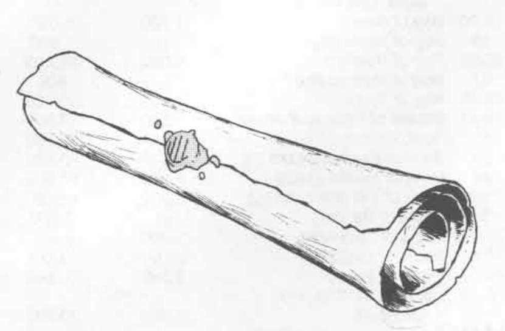

财宝 · Treasure
财宝：随机魔法物品总表 · Treasure: Random Treasure Determination
修订《地下城主指南》的“III. 魔法物品”随机表。先掷 d% 决定物品大类，再按该类的第二次 d% 掷骰选用表号。各表在后续主题依原书顺序列出。
| 首次 d% | 物品大类 | 第二次 d% → 表号 |
|---|---|---|
| 01–20 | 药水 Potions | 01–65 → III.A；66–00 → III.A.2 |
| 21–35 | 卷轴 Scrolls | 01–85 → III.B；86–00 → III.B.2 |
| 36–40 | 戒指 Rings | 01–67 → III.C；68–00 → III.C.2 |
| 41–45 | 权杖、法杖与魔杖 Rods, Staves & Wands | 01–40 → III.D；41–00 → III.D.2 |
| 46–60 | 杂项魔法物品 Miscellaneous Magic | 01–14 → III.E.1；15–28 → III.E.2；29–42 → III.E.3；43–56 → III.E.4；57–70 → III.E.5；71–85 → III.E.6；86–00 → III.E.7 |
| 61–75 | 护甲与盾牌 Armor & Shields | 01–50 → III.F；51–00 → III.F.2 |
| 76–86 | 剑 Swords | 01–95 → III.G；96–00 → III.G.2 |
| 87–00 | 杂项武器 Miscellaneous Weapons | 01–50 → III.H；51–00 → III.H.2 |
表中 `00` 代表百分骰结果 100；经验值与金币售价均按原书印数，`—` 表示未列数值。类别后的数字是原书表号，不是物品等级。
药水表 III.A／III.A.2 · Potions
经验值和售价的单位分别为经验值与金币。
III.A 药水
| d% | 结果 | 经验值 | 售价 |
|---|---|---|---|
| 01–03 | 动物控制药水 Animal Control * | 250 | 400 |
| 04–06 | 顺风耳药水 Clairaudience | 250 | 400 |
| 07–09 | 千里眼药水 Clairvoyance | 300 | 500 |
| 10–12 | 攀爬药水 Climbing | 300 | 500 |
| 13–15 | 妄想药水 Delusion ** | — | 150 |
| 16–18 | 缩小药水 Diminution | 300 | 500 |
| 19–20 | 龙类控制药水 Dragon Control * | 500–1,000 | 5,000–9,000 |
| 21–23 | 超感官知觉药水 ESP | 500 | 850 |
| 24–26 | 强效治疗药水 Extra-Healing | 400 | 800 |
| 27–29 | 抗火药水 Fire Resistance | 250 | 400 |
| 30–32 | 飞行药水 Flying | 500 | 750 |
| 33–34 | 气化形体药水 Gaseous Form | 300 | 400 |
| 35–36 | 巨人控制药水 Giant Control * | 400–900 | 1,000–6,000 |
| 37–39 | 巨人力量药水 Giant Strength *（F） | 500–750 | 900–1,400 |
| 40–41 | 成长药水 Growth | 250 | 300 |
| 42–47 | 治疗药水 Healing | 200 | 400 |
| 48–49 | 英雄药水 Heroism（F） | 300 | 500 |
| 50–51 | 人类控制药水 Human Control * | 500 | 900 |
| 52–54 | 隐形药水 Invisibility | 250 | 500 |
| 55–57 | 无敌药水 Invulnerability（F） | 350 | 500 |
| 58–60 | 浮空药水 Levitation | 250 | 400 |
| 61–63 | 长寿药水 Longevity | 500 | 1,000 |
| 64–66 | 以太化油 Oil of Etherealness | 600 | 1,500 |
| 67–69 | 滑溜油 Oil of Slipperiness | 400 | 750 |
| 70–72 | 爱情媚药 Philter of Love | 200 | 300 |
| 73–75 | 说服媚药 Philter of Persuasiveness | 400 | 850 |
| 76–78 | 植物控制药水 Plant Control | 250 | 300 |
| 79–81 | 自我变形药水 Polymorph (Self) | 200 | 350 |
| 82–84 | 毒药 Poison ** | — | — |
| 85–87 | 加速药水 Speed | 200 | 450 |
| 88–90 | 超级英雄药水 Super-Heroism（F） | 450 | 750 |
| 91–93 | 净水药水 Sweet Water | 200 | 250 |
| 94–96 | 寻宝药水 Treasure Finding | 600 | 2,000 |
| 97 | 不死生物控制药水 Undead Control * | 700 | 2,500 |
| 98–00 | 水下呼吸药水 Water Breathing | 400 | 900 |
III.A.2 新药水
| d% | 结果 | 经验值 | 售价 |
|---|---|---|---|
| 01–05 | 健康灵药 Elixir of Health | 350 | 2,000 |
| 06–15 | 生命灵药 Elixir of Life | 250 | 2,500 |
| 16–20 | 疯狂灵药 Elixir of Madness ** | — | — |
| 21–25 | 青春灵药 Elixir of Youth | 500 | 10,000 |
| 26–30 | 喷火药水 Fire Breath | 400 | 4,000 |
| 31–35 | 抗酸油 Oil of Acid Resistance | 500 | 5,000 |
| 36–40 | 破除附魔油 Oil of Disenchantment | 750 | 3,500 |
| 41–45 | 元素无敌油 Oil of Elemental Invulnerability | 1,000 | 5,000 |
| 46–49 | 烈焰燃烧油 Oil of Fiery Burning | 500 | 4,000 |
| 50–55 | 笨拙油 Oil of Fumbling ** | — | 1,000 |
| 56–60 | 冲击油 Oil of Impact | 750 | 5,000 |
| 61–65 | 锐化油 Oil of Sharpness | 每次涂抹 100 | 每次涂抹 1,000 |
| 66–70 | 永恒油 Oil of Timelessness | 500 | 2,000 |
| 71–75 | 美貌媚药 Philter of Beauty | 250 | 1,500 |
| 76–80 | 巧言媚药 Philter of Glibness | 500 | 2,500 |
| 81–85 | 结巴媚药 Philter of Stammering & Stuttering ** | — | 1,500 |
| 86–90 | 彩虹色调药水 Rainbow Hues | 200 | 800 |
| 91–95 | 腹语药水 Ventriloquism | 200 | 800 |
| 96–00 | 活力药水 Vitality | 300 | 2,500 |
\ 控制药水对哪类生物有效，必须掷骰决定；参见对应物品说明。原表“巨人力量药水”也印有 ，这里一并照录。
\\ 地下城主应尽力使持有者相信该药水无害；详情参见各物品说明。
（F）仅战士和骑士职业可用。
卷轴表 III.B／III.B.2 · Scrolls
以下合并的连续表格。III.B 表第三栏对法术卷轴给出法术环位范围，对防护卷轴给出经验值。星号标明牧师法术环位。
III.B 卷轴
| d% | 结果 | 法术环位范围／经验值 |
|---|---|---|
| 01–10 | 1 个法术 | 1–4 |
| 11–16 | 1 个法术 | 1–6 |
| 17–19 | 1 个法术 | 2–9（d8+1）或 2–7*（d6+1） |
| 20–24 | 2 个法术 | 1–4 |
| 25–27 | 2 个法术 | 1–8 或 1–6* |
| 28–32 | 3 个法术 | 1–4 |
| 33–35 | 3 个法术 | 2–9 或 2–7* |
| 36–39 | 4 个法术 | 1–6 |
| 40–42 | 4 个法术 | 1–8 或 1–6* |
| 43–46 | 5 个法术 | 1–6 |
| 47–49 | 5 个法术 | 1–8 或 1–6* |
| 50–52 | 6 个法术 | 1–6 |
| 53–54 | 6 个法术 | 3–8（d6+2）或 3–6*（d4+2） |
| 55–57 | 7 个法术 | 1–8 |
| 58–59 | 7 个法术 | 2–9 |
| 60 | 7 个法术 | 4–9（d6+3）或 4–7*（d4+3） |
| 61–62 | 防护恶魔 Protection—Demons | 2,500 |
| 63–64 | 防护魔鬼 Protection—Devils | 2,500 |
| 65–70 | 防护元素生物 Protection—Elementals | 1,500 |
| 71–76 | 防护兽化人 Protection—Lycanthropes | 1,000 |
| 77–82 | 防护魔法 Protection—Magic | 1,500 |
| 83–87 | 防护石化 Protection—Petrification | 2,000 |
| 88–92 | 防护附身 Protection—Possession | 2,000 |
| 93–97 | 防护不死生物 Protection—Undead | 1,500 |
| 98–00 | 诅咒卷轴 Curse ** | — |
\* 法术卷轴中有 30% 属于牧师法术（掷 d%，71–00），其中 25% 属于德鲁伊法术；魔法师卷轴中有 10% 属于幻术师法术。此划分仅适用于上表 01–60 的法术卷轴。表中带星号的范围为牧师法术环位。
\\ 地下城主应尽力让玩家相信其角色应阅读诅咒卷轴；参见《地下城主指南》第 121 页。
III.B.2 新防护卷轴
| d% | 结果 | 经验值 |
|---|---|---|
| 01–02 | 防护酸液 Protection—Acid | 2,500 |
| 03–07 | 防护龙类喷吐 Protection—Breath Weapons, Dragon | 2,000 |
| 08–12 | 防护非龙类喷吐 Protection—Breath Weapons, Non-dragon | 2,000 |
| 13–17 | 防护寒冷 Protection—Cold | 2,000 |
| 18–22 | 防护电击 Protection—Electricity | 1,500 |
| 23–27 | 防护火焰 Protection—Fire | 2,000 |
| 28–32 | 防护气体 Protection—Gas | 2,000 |
| 33–37 | 防护幻术 Protection—Illusions | 1,500 |
| 38–42 | 防护麻痹 Protection—Paralyzation | 1,500 |
| 43–48 | 防护植物 Protection—Plants | 1,000 |
| 49–54 | 防护毒素 Protection—Poison | 1,000 |
| 55–59 | 防护陷阱 Protection—Traps | 2,000 |
| 60–64 | 防护水 Protection—Water | 1,500 |
| 65–70 | 防护魔法钝击武器 Protection—Weapons, Magical Blunt | 1,000 |
| 71–76 | 防护魔法锐器 Protection—Weapons, Magical Edged | 1,000 |
| 77–82 | 防护魔法远射武器 Protection—Weapons, Magical Missile | 1,000 |
| 83–88 | 防护非魔法钝击武器 Protection—Weapons, Non-magic Blunt | 1,000 |
| 89–94 | 防护非魔法锐器 Protection—Weapons, Non-magic Edged | 1,000 |
| 95–00 | 防护非魔法远射武器 Protection—Weapons, Non-magic Missile | 1,000 |
戒指表 III.C／III.C.2 · Rings
经验值和售价的单位分别为经验值与金币。
III.C 戒指
| d% | 结果 | 经验值 | 售价 |
|---|---|---|---|
| 01–06 | 逆反戒指 Contrariness | — | 1,000 |
| 07–12 | 妄想戒指 Delusion | — | 2,000 |
| 13–14 | 灯神召唤戒指 Djinni Summoning * | 3,000 | 20,000 |
| 15 | 元素号令戒指 Elemental Command | 5,000 | 25,000 |
| 16–21 | 羽落戒指 Feather Falling | 1,000 | 5,000 |
| 22–27 | 抗火戒指 Fire Resistance | 1,000 | 5,000 |
| 28–30 | 自由行动戒指 Free Action | 1,000 | 5,000 |
| 31–33 | 人类影响戒指 Human Influence * | 2,000 | 10,000 |
| 34–40 | 隐形戒指 Invisibility | 1,500 | 7,500 |
| 41–43 | 哺乳动物控制戒指 Mammal Control * | 1,000 | 5,000 |
| 44 | 多次祈愿戒指 Multiple Wishes * | 5,000 | 25,000 |
| 45–60 | 防护戒指 Protection | 2,000–4,000 | 10,000–20,000 |
| 61 | 再生戒指 Regeneration | 5,000 | 40,000 |
| 62–63 | 流星戒指 Shooting Stars | 3,000 | 15,000 |
| 64–65 | 储法戒指 Spell Storing | 2,500 | 22,500 |
| 66–69 | 法术反弹戒指 Spell Turning | 2,000 | 17,500 |
| 70–75 | 游泳戒指 Swimming | 1,000 | 5,000 |
| 76–77 | 念动戒指 Telekinesis * | 2,000 | 10,000 |
| 78–79 | 三次祈愿戒指 Three Wishes * | 3,000 | 15,000 |
| 80–85 | 温暖戒指 Warmth | 1,000 | 5,000 |
| 86–90 | 水上行走戒指 Water Walking | 1,000 | 5,000 |
| 91–98 | 虚弱戒指 Weakness | — | 1,000 |
| 99 | 魔法师戒指 Wizardry *（M） | 4,000 | 50,000 |
| 00 | X 光视觉戒指 X-Ray Vision | 4,000 | 35,000 |
\* 这些戒指拥有最强大的魔法能力。地下城主可裁定其魔法充能有限，耗尽后失效。（M）仅魔法师职业可用。原表在“人类影响”与“哺乳动物控制”后所印符号形似黑点，译表保留为星号并据页下注释处理。
III.C.2 新戒指
| d% | 结果 | 经验值 | 售价 |
|---|---|---|---|
| 01–08 | 动物友谊戒指 Animal Friendship | 1,000 | 5,000 |
| 09–10 | 万能戒指 Anything | 5,000 | 55,000 |
| 11–20 | 闪现戒指 Blinking | 1,000 | 5,000 |
| 21–22 | 波寇布之戒 Boccob | 250 | 2,500 |
| 23–31 | 变色龙戒指 Chameleon Power | 1,000 | 5,000 |
| 32–40 | 笨拙戒指 Clumsiness | — | 3,000 |
| 41–49 | 妖精戒指 Faerie | 1,000 | 7,500 |
| 50–58 | 跳跃戒指 Jumping | 1,000 | 5,000 |
| 59–67 | 心灵护盾戒指 Mind Shielding | 500 | 5,000 |
| 68–70 | 撞槌戒指 Ram | 750 | 7,500 |
| 71–79 | 电爪戒指 Shocking Grasp | 1,000 | 5,000 |
| 80–92 | 维生戒指 Sustenance | 500 | 3,500 |
| 93–00 | 真言戒指 Truth | 1,000 | 5,000 |
权杖与法杖表 III.D · Rods & Staves
经验值和售价均按魔法物品充能全满计算；`每次充能`的数值按原书单位照录。若条目后未注明职业限制，各职业都能使用。
| d% | 结果 | 经验值 | 售价 |
|---|---|---|---|
| 01–06 | 吸收权杖 Rod of Absorption（C、M） | 7,500 | 40,000 |
| 07–10 | 警戒权杖 Rod of Alertness | 7,000 | 50,000 |
| 11 | 迷惑权杖 Rod of Beguiling（C、M、T） | 5,000 | 30,000 |
| 12–21 | 消除权杖 Rod of Cancellation | 10,000 | 15,000 |
| 22–26 | 连枷权杖 Rod of Flailing | 2,000 | 20,000 |
| 27 | 君王威能权杖 Rod of Lordly Might（F） | 6,000 | 20,000 |
| 28–30 | 通路权杖 Rod of Passage | 5,000 | 50,000 |
| 31 | 复活权杖 Rod of Resurrection（C） | 10,000 | 35,000 |
| 32 | 统治权杖 Rod of Rulership | 8,000 | 35,000 |
| 33–36 | 庇护权杖 Rod of Security | 3,000 | 30,000 |
| 37 | 重击权杖 Rod of Smiting（C、F） | 4,000 | 15,000 |
| 38–40 | 华美权杖 Rod of Splendor | 2,500 | 25,000 |
| 41 | 号令法杖 Staff of Command（C、M） | 5,000 | 25,000 |
| 42–48 | 治疗法杖 Staff of Curing（C） | 6,000 | 25,000 |
| 49–55 | 钉头锤法杖 Staff-Mace | 1,500 | 12,500 |
| 56 | 大法师法杖 Staff of the Magi（M） | 15,000 | 75,000 |
| 57 | 威能法杖 Staff of Power（M） | 12,000 | 60,000 |
| 58–63 | 蛇形法杖 Staff of the Serpent（C） | 7,000 | 35,000 |
| 64–70 | 投石法杖 Staff of Slinging（D） | 2,000 | 10,000 |
| 71–76 | 长矛法杖 Staff-Spear | 1,000–3,500 | 5,000–25,000 |
| 77–82 | 打击法杖 Staff of Striking（C、M） | 6,000 | 15,000 |
| 83–85 | 虫群法杖 Staff of Swarming Insects（C、M） | 每次充能 100 | 每次充能 500 |
| 86 | 雷电法杖 Staff of Thunder & Lightning | 8,000 | 20,000 |
| 87–90 | 枯萎法杖 Staff of Withering（C） | 8,000 | 35,000 |
| 91–00 | 林地法杖 Staff of the Woodlands（D） | 8,000 | 40,000 |
（C）牧师职业；（D）德鲁伊；（F）战士与骑士职业；（M）魔法师职业；（T）盗贼职业。的法杖表下有一幅独立的权杖线稿：

魔杖表 III.D.2 · Wands
经验值和售价均假定魔杖充能全满。如无括号限制，各职业均可使用。
| d% | 结果 | 经验值 | 售价 |
|---|---|---|---|
| 01 | 万能魔杖 Anything Wand | 2,500 | 12,500 |
| 02–05 | 小圆盾魔杖 Buckler Wand（F、M、T） | 500 | 5,000 |
| 06–07 | 咒法魔杖 Wand of Conjuration（M） | 7,000 | 35,000 |
| 08–10 | 落叶魔杖 Wand of Defoliation | 1,000 | 6,000 |
| 11–12 | 土石魔杖 Wand of Earth & Stone | 1,000–1,500 | 10,000–15,000 |
| 13–16 | 侦测敌人魔杖 Wand of Enemy Detection | 2,000 | 10,000 |
| 17–20 | 恐惧魔杖 Wand of Fear（C、M） | 3,000 | 15,000 |
| 21–22 | 火焰魔杖 Wand of Fire（M） | 4,500 | 25,000 |
| 23–26 | 火球魔杖 Wand of Fireballs | 2,000 | 16,000 |
| 27–30 | 灭火魔杖 Wand of Flame Extinguishing | 1,250 | 10,000 |
| 31 | 力场魔杖 Wand of Force（F、M） | 3,000 | 30,000 |
| 32 | 寒霜魔杖 Wand of Frost（M） | 6,000 | 50,000 |
| 33–35 | 冰风暴魔杖 Wand of Ice Storms | 2,500 | 20,000 |
| 36–39 | 照明魔杖 Wand of Illumination | 2,000 | 10,000 |
| 40–43 | 幻术魔杖 Wand of Illusion（M） | 3,000 | 20,000 |
| 44–45 | 闪电魔杖 Wand of Lightning（M） | 4,000 | 30,000 |
| 46–49 | 闪电束魔杖 Wand of Lightning Bolts | 2,000 | 16,000 |
| 50–53 | 侦测魔法魔杖 Wand of Magic Detection | 2,500 | 25,000 |
| 54–61 | 魔法飞弹魔杖 Wand of Magic Missiles | 4,000 | 35,000 |
| 62–66 | 金属矿物侦测魔杖 Wand of Metal & Mineral Detection | 1,500 | 7,500 |
| 67–68 | 金属号令魔杖 Wand of Metal Command | 2,500 | 10,000 |
| 69–74 | 消解魔杖 Wand of Negation | 3,500 | 15,000 |
| 75–78 | 麻痹魔杖 Wand of Paralyzation（M） | 3,500 | 25,000 |
| 79–82 | 变形魔杖 Wand of Polymorphing（M） | 3,500 | 25,000 |
| 83–86 | 密门陷阱定位魔杖 Wand of Secret Door & Trap Location | 5,000 | 40,000 |
| 87–90 | 改变大小魔杖 Wand of Size Alteration | 3,000 | 20,000 |
| 91–92 | 蒸汽烟雾魔杖 Wand of Steam & Vapor（C、M） | 4,500 | 25,000 |
| 93–00 | 奇迹魔杖 Wand of Wonder | 6,000 | 10,000 |
（C）牧师职业；（F）战士和骑士职业；（M）魔法师职业；（T）盗贼职业。
杂项魔法物品表 III.E.1–2 · Miscellaneous Magic, Tables III.E.1–2
以下译录，延续随机魔法物品总表。经验值和售价的单位分别为经验值与金币；斜线分隔不同型号的原书数值。
III.E.1
| d% | 结果 | 经验值 | 售价 |
|---|---|---|---|
| 01–02 | 炼金壶 Alchemy Jug | 3,000 | 12,000 |
| 03–04 | 无法逃避定位护符 Amulet of Inescapable Location | — | 1,000 |
| 05 | 生命守护护符 Amulet of Life Protection | 5,000 | 20,000 |
| 06–07 | 位面护符 Amulet of the Planes | 6,000 | 30,000 |
| 08–11 | 防侦测定位护符 Amulet of Proof Against Detection and Location | 4,000 | 15,000 |
| 12–13 | 夸利什的装置 Apparatus of Kwalish | 8,000 | 35,000 |
| 14–16 | 指路箭 Arrow of Direction | 2,500 | 17,500 |
| 17 | 神器或遗物 Artifact or Relic；见《地下城主指南》第 124 页特别表 | — | — |
| 18–20 | 魔豆袋 Bag of Beans | 1,000 | 5,000 |
| 21 | 吞噬袋 Bag of Devouring | — | 1,500 |
| 22–26 | 次元袋 Bag of Holding | 5,000 | 25,000 |
| 27 | 转化袋 Bag of Transmuting | — | 500 |
| 28–29 | 戏法袋 Bag of Tricks | 2,500 | 15,000 |
| 30–31 | 丰沛药水烧杯 Beaker of Plentiful Potions | 1,500 | 12,500 |
| 32 | 折叠船 Boat, Folding | 10,000 | 25,000 |
| 33 | 崇高善行之书 Book of Exalted Deeds（C） | 8,000 | 40,000 |
| 34 | 无限法术之书 Book of Infinite Spells | 9,000 | 50,000 |
| 35 | 卑劣黑暗之书 Book of Vile Darkness（C） | 8,000 | 40,000 |
| 36 | 舞靴 Boots of Dancing | — | 5,000 |
| 37–42 | 精灵之靴 Boots of Elvenkind | 1,000 | 5,000 |
| 43–47 | 浮空靴 Boots of Levitation | 2,000 | 15,000 |
| 48–51 | 加速靴 Boots of Speed | 2,500 | 20,000 |
| 52–55 | 大步弹跳靴 Boots of Striding and Springing | 2,500 | 20,000 |
| 56–58 | 水元素号令碗 Bowl Commanding Water Elementals（M） | 4,000 | 25,000 |
| 59 | 溺亡碗 Bowl of Watery Death（M） | — | 1,000 |
| 60–79 | 防御护腕 Bracers of Defense | 500¹ | 3,000¹ |
| 80–81 | 无防御护腕 Bracers of Defenselessness | — | 2,000 |
| 82–84 | 火元素号令火盆 Brazier Commanding Fire Elementals（M） | 4,000 | 25,000 |
| 85 | 催眠烟火盆 Brazier of Sleep Smoke（M） | — | 1,000 |
| 86–92 | 护盾胸针 Brooch of Shielding | 1,000 | 10,000 |
| 93 | 活化攻击扫帚 Broom of Animated Attack | — | 3,000 |
| 94–98 | 飞行扫帚 Broom of Flying | 2,000 | 10,000 |
| 99–00 | 巴克纳德的常满钱袋 Bucknard’s Everfull Purse | 1,500／2,500／4,000 | 15,000／25,000／40,000 |
¹ 防御护腕的数值按护甲等级优于 10 的每一级计算，例如 AC 6 给予 2,000 经验值，售价 12,000 金币。
III.E.2
| d% | 结果 | 经验值 | 售价 |
|---|---|---|---|
| 01–06 | 祈请蜡烛 Candle of Invocation（C） | 1,000 | 5,000 |
| 07–08 | 飞毯 Carpet of Flying | 7,500 | 25,000 |
| 09–10 | 气元素控制香炉 Censer Controlling Air Elementals（M） | 4,000 | 25,000 |
| 11 | 敌对气元素召唤香炉 Censer of Summoning Hostile Air Elementals（M） | — | 1,000 |
| 12–13 | 开门钟 Chime of Opening | 3,500 | 20,000 |
| 14 | 饥饿钟 Chime of Hunger | — | — |
| 15–18 | 偏斜斗篷 Cloak of Displacement | 3,000 | 17,500 |
| 19–27 | 精灵斗篷 Cloak of Elvenkind | 1,000 | 6,000 |
| 28–30 | 蝠鲼斗篷 Cloak of Manta Ray | 2,000 | 12,500 |
| 31–32 | 毒斗篷 Cloak of Poisonousness | — | 2,500 |
| 33–55 | 防护斗篷 Cloak of Protection | 1,000¹ | 10,000¹ |
| 56–60 | 水晶球 Crystal Ball（M） | 1,000² | 5,000² |
| 61 | 催眠水晶球 Crystal Hypnosis Ball（M） | — | 3,000 |
| 62–63 | 力场立方体 Cube of Force | 3,000 | 20,000 |
| 64–65 | 抗冻立方体 Cube of Frost Resistance | 2,000 | 14,000 |
| 66–67 | 位面立方门 Cubic Gate | 5,000 | 17,500 |
| 68–69 | 戴恩的瞬间堡垒 Daern’s Instant Fortress | 7,000 | 27,500 |
| 70–72 | 无尽水瓶 Decanter of Endless Water | 1,000 | 3,000 |
| 73–76 | 万象牌组 Deck of Many Things | — | 10,000 |
| 77 | 致聋鼓 Drums of Deafening | — | 500 |
| 78–79 | 恐慌鼓 Drums of Panic | 6,500 | 35,000 |
| 80–85 | 显形粉 Dust of Appearance | 1,000 | 4,000 |
| 86–91 | 消失粉 Dust of Disappearance | 2,000 | 8,000 |
| 92 | 喷嚏窒息粉 Dust of Sneezing and Choking | — | 1,000 |
| 93 | 火巨灵瓶 Efreeti Bottle | 9,000 | 45,000 |
| 94 | 恒烟瓶 Eversmoking Bottle | 500 | 2,500 |
| 95 | 魅惑之眼 Eyes of Charming（M） | 4,000 | 24,000 |
| 96–97 | 鹰眼镜片 Eyes of the Eagle | 3,500 | 18,000 |
| 98–99 | 微视镜片 Eyes of Minute Seeing | 2,000 | 12,500 |
| 00 | 石化之眼 Eyes of Petrification | —³ | —³ |
¹ 防护斗篷的数值按每一点防护加值计算。² 水晶球每增加一项额外功能，数值增加 100%。³ 如果石化之眼产生相反效果，其经验值为 12,500，售价 50,000 金币。
（C）牧师职业；（M）魔法师职业。
杂项魔法物品表 III.E.3 · Miscellaneous Magic, Table III.E.3
以下合并的 III.E.3 表。经验值和售价的单位分别为经验值与金币。
| d% | 结果 | 经验值 | 售价 |
|---|---|---|---|
| 01–15 | 奇妙力量塑像 Figurine of Wondrous Power | 100¹ | 1,000¹ |
| 16 | 诅咒瓶 Flask of Curses | — | 1,000 |
| 17–18 | 敏捷手套 Gauntlets of Dexterity | 1,000 | 10,000 |
| 19–20 | 笨拙手套 Gauntlets of Fumbling | — | 1,000 |
| 21–22 | 食人魔力量手套 Gauntlets of Ogre Power（C、F、T） | 1,000 | 10,000 |
| 23–25 | 游泳攀爬手套 Gauntlets of Swimming and Climbing（C、F、T） | 1,000 | 10,000 |
| 26 | 明亮宝石 Gem of Brightness | 2,000 | 17,500 |
| 27 | 洞察宝石 Gem of Seeing | 2,000 | 25,000 |
| 28 | 性别转换腰带 Girdle of Femininity/Masculinity（C、F、T） | — | 1,000 |
| 29 | 巨人力量腰带 Girdle of Giant Strength（C、F、T） | 200 | 2,500 |
| 30 | 光辉头盔 Helm of Brilliance | 2,500 | 60,000 |
| 31–35 | 通晓语言与阅读魔法头盔 Helm of Comprehending Languages & Reading Magic | 1,000 | 12,500 |
| 36–37 | 逆向阵营头盔 Helm of Opposite Alignment | — | 1,000 |
| 38–39 | 心灵感应头盔 Helm of Telepathy | 3,000 | 35,000 |
| 40 | 传送头盔 Helm of Teleportation | 2,500 | 30,000 |
| 41–45 | 水下行动头盔 Helm of Underwater Action | 1,000 | 10,000 |
| 46 | 爆破号角 Horn of Blasting² | 1,000 | 55,000 |
| 47–48 | 泡沫号角 Horn of Bubbles | — | — |
| 49 | 崩塌号角 Horn of Collapsing | 1,500 | 25,000 |
| 50–53 | 海神号角 Horn of the Tritons（C、F） | 2,000 | 17,500 |
| 54–60 | 英灵号角 Horn of Valhalla | 1,000² | 15,000² |
| 61–63 | 加速马蹄铁 Horseshoes of Speed | 2,000 | 10,000 |
| 64–65 | 和风马蹄铁 Horseshoes of a Zephyr | 1,500 | 7,500 |
| 66–70 | 冥想熏香 Incense of Meditation（C） | 500 | 7,500 |
| 71 | 执迷熏香 Incense of Obsession（C） | — | 500 |
| 72 | 艾恩石 Ioun Stones | 300³ | 5,000³ |
| 73–78 | 吟游诗人乐器 Instrument of the Bards | 1,000⁴ | 5,000⁴ |
| 79–80 | 铁瓶 Iron Flask | — | — |
| 81–85 | 闪电标枪 Javelin of Lightning（F） | 250 | 3,000 |
| 86–90 | 穿透标枪 Javelin of Piercing（F） | 250 | 3,000 |
| 91 | 攻击宝石 Jewel of Attacks | — | 1,000 |
| 92 | 无瑕宝石 Jewel of Flawlessness | — | 每刻面 1,000 |
| 93–00 | 基奥托姆的软膏 Keoghtom’s Ointment | 500 | 10,000 |
¹ 塑像每个生命骰计值。² 原书脚注写明：青铜号角的数值加倍，铁号角则为三倍；脚注标记印在“英灵号角”后，译表照录。³ 每颗石头计值。⁴ 对吟游诗人，按乐器的每一级计值。
（C）牧师职业；（F）战士与骑士职业；（T）盗贼职业。原书“爆破号角”后亦印有脚注标记，页下注释未明确它如何与英灵号角的青铜／铁型号对应，故保留原貌供校勘。
杂项魔法物品表 III.E.4 · Miscellaneous Magic, Table III.E.4
以下译录的 III.E.4 表。经验值和售价的单位分别为经验值与金币。
| d% | 结果 | 经验值 | 售价 |
|---|---|---|---|
| 01 | 获益咒法秘典 Libram of Gainful Conjuration（M） | 8,000 | 40,000 |
| 02 | 难言诅咒秘典 Libram of Ineffable Damnation（M） | 8,000 | 40,000 |
| 03 | 白银魔法秘典 Libram of Silver Magic（M） | 8,000 | 40,000 |
| 04 | 建筑七弦琴 Lyre of Building | 5,000 | 30,000 |
| 05 | 健体手册 Manual of Bodily Health | 5,000 | 50,000 |
| 06 | 增力手册 Manual of Gainful Exercise | 5,000 | 50,000 |
| 07 | 魔像手册 Manual of Golems（C、M） | 3,000 | 30,000 |
| 08 | 精湛武艺手册 Manual of Puissant Skill at Arms（F） | 8,000 | 40,000 |
| 09 | 敏捷行动手册 Manual of Quickness of Action | 5,000 | 50,000 |
| 10 | 隐秘窃取手册 Manual of Stealthy Pilfering（T） | 8,000 | 40,000 |
| 11 | 泰坦十字镐 Mattock of the Titans（F） | 3,500 | 7,000 |
| 12 | 泰坦大锤 Maul of the Titans | 4,000 | 12,000 |
| 13–15 | 超感官知觉徽章 Medallion of ESP | 1,000／3,000 | 10,000／30,000 |
| 16–17 | 思维投射徽章 Medallion of Thought Projection | — | 1,000 |
| 18 | 生命囚禁镜 Mirror of Life Trapping（M） | 2,500 | 25,000 |
| 19 | 心灵威能镜 Mirror of Mental Prowess | 5,000 | 50,000 |
| 20 | 反对镜 Mirror of Opposition | — | 2,000 |
| 21–23 | 适应项链 Necklace of Adaptation | 1,000 | 10,000 |
| 24–27 | 飞弹项链 Necklace of Missiles | 50¹ | 200¹ |
| 28–33 | 祈祷珠项链 Necklace of Prayer Beads（C） | 500² | 3,000² |
| 34–35 | 勒颈项链 Necklace of Strangulation | — | 1,000 |
| 36–38 | 捕获网 Net of Entrapment（C、F、T） | 1,000 | 7,500 |
| 39–42 | 圈套网 Net of Snaring（C、F、T） | 1,000 | 6,000 |
| 43–44 | 诺祖尔的奇妙颜料 Nolzur’s Marvelous Pigments | 500³ | 3,000³ |
| 45–46 | 威能珍珠 Pearl of Power（M） | 200⁴ | 2,000⁴ |
| 47–48 | 智慧珍珠 Pearl of Wisdom（C） | 500 | 5,000 |
| 49–50 | 腐烂护符 Periapt of Foul Rotting | — | 1,000 |
| 51–53 | 健康护符 Periapt of Health | 1,000 | 10,000 |
| 54–60 | 防毒护符 Periapt of Proof Against Poison | 1,500 | 12,500 |
| 61–64 | 止血护符 Periapt of Wound Closure | 1,000 | 10,000 |
| 65–70 | 忠信护符 Phylactery of Faithfulness（C） | 1,000 | 7,500 |
| 71–74 | 长寿护符 Phylactery of Long Years（C） | 3,000 | 25,000 |
| 75–76 | 怪物关注护符 Phylactery of Monstrous Attention（C） | — | 2,000 |
| 77–84 | 下水道排箫 Pipes of the Sewers | 1,750 | 8,500 |
| 85 | 便携洞 Portable Hole | 5,000 | 50,000 |
| 86–00 | 夸尔的羽毛符记 Quaal’s Feather Token | 500／1,000 | 2,000／7,000 |
¹ 飞弹项链每枚飞弹的每个生命骰计值。² 祈祷珠项链每颗特殊珠计值。³ 奇妙颜料每罐计值。⁴ 威能珍珠按法术的每一环计值。
（C）牧师职业；（F）战士与骑士职业；（M）魔法师职业；（T）盗贼职业。
杂项魔法物品表 III.E.5 · Miscellaneous Magic, Table III.E.5
以下译录的 III.E.5 表。经验值和售价的单位分别为经验值与金币。
| d% | 结果 | 经验值 | 售价 |
|---|---|---|---|
| 01 | 大法师长袍 Robe of the Archmagi（M） | 6,000 | 65,000 |
| 02–08 | 融入长袍 Robe of Blending | 3,500 | 35,000 |
| 09 | 眼睛长袍 Robe of Eyes（M） | 4,500 | 50,000 |
| 10 | 无力长袍 Robe of Powerlessness（M） | — | 1,000 |
| 11 | 闪烁色彩长袍 Robe of Scintillating Colors（C、M） | 2,750 | 25,000 |
| 12–19 | 实用物品长袍 Robe of Useful Items（M） | 1,500 | 15,000 |
| 20–25 | 攀爬绳 Rope of Climbing | 1,000 | 10,000 |
| 26–27 | 收紧绳 Rope of Constriction | — | 1,000 |
| 28–31 | 缠绕绳 Rope of Entanglement | 1,250 | 12,000 |
| 32 | 窒息地毯 Rug of Smothering | — | 1,500 |
| 33 | 迎客地毯 Rug of Welcome（M） | 6,500 | 45,000 |
| 34 | 强力切割锯 Saw of Mighty Cutting（F） | 1,750 | 12,500 |
| 35 | 死亡圣甲虫 Scarab of Death | — | 2,500 |
| 36–38 | 激怒敌人圣甲虫 Scarab of Enraging Enemies | 1,000 | 8,000 |
| 39–40 | 疯狂圣甲虫 Scarab of Insanity | 1,500 | 11,000 |
| 41–46 | 防护圣甲虫 Scarab of Protection | 2,500 | 25,000 |
| 47 | 巨型挖掘铲 Spade of Colossal Excavation（F） | 1,000 | 6,500 |
| 48 | 湮灭之球 Sphere of Annihilation（M） | 3,750 | 30,000 |
| 49–50 | 土元素控制石 Stone of Controlling Earth Elementals | 1,500 | 12,500 |
| 51–52 | 好运石 Stone of Good Luck (Luckstone) | 3,000 | 25,000 |
| 53–54 | 负重石 Stone of Weight (Loadstone) | — | 1,000 |
| 55–57 | 纯善护符 Talisman of Pure Good（C） | 3,500 | 27,500 |
| 58 | 球体护符 Talisman of the Sphere（M） | 100 | 10,000 |
| 59–60 | 至恶护符 Talisman of Ultimate Evil（C） | 3,500 | 32,500 |
| 61–66 | 扎吉护符 Talisman of Zagy | 1,000 | 10,000 |
| 67 | 清晰思考之书 Tome of Clear Thought | 8,000 | 48,000 |
| 68 | 领导与影响之书 Tome of Leadership and Influence | 7,500 | 40,000 |
| 69 | 理解之书 Tome of Understanding | 8,000 | 43,500 |
| 70–76 | 驭鱼三叉戟 Trident of Fish Command（C、F、T） | 500 | 4,000 |
| 77–78 | 降服三叉戟 Trident of Submission（F） | 1,250 | 12,500 |
| 79–83 | 警告三叉戟 Trident of Warning（C、F、T） | 1,000 | 10,000 |
| 84–85 | 渴望三叉戟 Trident of Yearning | — | 1,000 |
| 86–87 | 空洞魔法书 Vacuous Grimoire | — | 1,000 |
| 88–90 | 万界之井 Well of Many Worlds | 6,000 | 12,000 |
| 91–00 | 飞行之翼 Wings of Flying | 750 | 7,500 |
若未注明限制，各职业均可使用。（C）牧师职业；（F）战士与骑士职业；（M）魔法师职业；（T）盗贼职业。
杂项魔法物品表 III.E.6–7 · Miscellaneous Magic, Tables III.E.6–7
以下译录的两张新杂项魔法物品表。经验值和售价的单位分别为经验值与金币；未列值的星号条目依具体物品说明处理。
III.E.6
| d% | 结果 | 经验值 | 售价 |
|---|---|---|---|
| 01–04 | 防不死生物护符 Amulet Versus Undead | 每级 200 | 每级 1,000 |
| 05 | 万能物品 Anything Item | 4,000 | 40,000 |
| 06–07 | 力场珠 Beads of Force | 每颗 200 | 每颗 1,000 |
| 08–14 | 波寇布的祝福之书 Boccob’s Blessed Book（M） | 4,500 | 35,000 |
| 15–16 | 北地靴 Boots of the North | 1,500 | 7,500 |
| 17–19 | 多种足迹靴 Boots of Varied Tracks | 1,500 | 7,500 |
| 20 | 飞翼靴 Boots, Winged | 2,000 | 20,000 |
| 21–24 | 射手护腕 Bracers of Archery（F） | 1,000 | 10,000 |
| 25–26 | 攀枝护腕 Bracers of Brachiation | 1,000 | 10,000 |
| 27–28 | 中断钟 Chime of Interruption | 2,000 | 20,000 |
| 29–30 | 蛛形斗篷 Cloak of Arachnida | 3,000 | 25,000 |
| 31–34 | 蝙蝠斗篷 Cloak of the Bat | 1,500 | 15,000 |
| 35–36 | 气旋锥 Cyclocone（M） | 300 | 15,000 |
| 37–40 | 蜂巢飞镖 Dart of the Hornets’ Nest | 750 | 7,500 |
| 41–42 | 幻象牌组 Deck of Illusions | 1,500 | 15,000 |
| 43–44 | 明暗双烛台 Dicerion of Light & Darkness（C） | 2,500 | 25,000 |
| 45–47 | 吸水粉 Dust of Dryness | 1,000 | 8,000 |
| 48–50 | 幻象粉 Dust of Illusion | 每撮 10 | 每撮 100 |
| 51–54 | 无痕粉 Dust of Tracelessness | 500 | 每撮 200 |
| 55–56 | 欲望之卵 Egg of Desire | — * | — * |
| 57–60 | 理性之卵 Egg of Reason | 250 | 2,500 |
| 61–62 | 破碎之卵 Egg of Shattering | — | 500 |
| 63–65 | 洞见宝石 Gem of Insight | 3,000 | 3,000 |
| 66–68 | 矮人腰带 Girdle of Dwarvenkind | 3,500 | 20,000 |
| 69–76 | 多口袋腰带 Girdle of Many Pouches | 1,000 | 10,000 |
| 77–79 | 截接飞弹手套 Gloves of Missile Snaring | 1,500 | 10,000 |
| 80–83 | 盗窃手套 Gloves of Thievery | 1,000 | 5,000 |
| 84–88 | 差异帽 Hat of Difference | 1,000 | 8,000 |
| 89–95 | 易容帽 Hat of Disguise | 1,000 | 7,500 |
| 96–00 | 愚蠢帽 Hat of Stupidity | — | 1,000 |
III.E.7
| d% | 结果 | 经验值 | 售价 |
|---|---|---|---|
| 01–05 | 休沃德的便利背包 Heward’s Handy Haversack | 3,000 | 30,000 |
| 06–10 | 浓雾号角 Horn of Fog | 400 | 4,000 |
| 11–12 | 善良（邪恶）号角 Horn of Goodness (Evil) | 750 | 3,250 |
| 13–14 | 比拉罗的铁箍 Iron Bands of Bilarro | 750 | 5,000 |
| 15–18 | 侦测透镜 Lens of Detection | 250 | 1,500 |
| 19–21 | 紫外视觉透镜 Lens of Ultravision | 750 | 5,000 |
| 22–23 | 塞勒斯提安的披肩 Mantle of Celestian | 1,500 | 15,000 |
| 24–27 | 穆尔林德的勺子 Murlynd’s Spoon | 750 | 4,000 |
| 28–29 | 海妖珍珠 Pearl of the Sirines | 900 | 4,500 |
| 30–31 | 贤者之石 Philosopher’s Stone | 1,000 | 10,000 |
| 32–37 | 随取袋 Pouch of Accessibility | 1,250 | 12,500 |
| 38 | 扎吉格的牢笼 Prison of Zagyg（M） | 2,750 | 25,000 |
| 39–40 | 艾罗娜的箭袋 Quiver of Ehlonna | 1,500 | 10,000 |
| 41–42 | 星辰长袍 Robe of Stars（M） | 4,000 | 12,000 |
| 43–48 | 害虫长袍 Robe of Vermin（M） | — | 1,000 |
| 49–50 | 防魔像圣甲虫 Scarab Versus Golems | — * | — * |
| 51–54 | 阴影提灯 Shadow Lanthorn | 750 | 6,000 |
| 55–57 | 缩小床单 Sheet of Smallness | 1,250 | 12,500 |
| 58–59 | 法兰恩的鞋 Shoes of Fharlanghn | 2,000 | 20,000 |
| 60–64 | 踢击拖鞋 Slippers of Kicking | 750 | 6,000 |
| 65–70 | 蛛行拖鞋 Slippers of Spider Climbing | 1,000 | 10,000 |
| 71–72 | 万能胶 Sovereign Glue | 每盎司 1,000 | 每盎司 750 |
| 73–77 | 搅拌勺 Spoon of Stirring | 500 | 5,000 |
| 78–81 | 石马 Stone Horse | 2,000 | 12,000 |
| 82–84 | 终极溶剂 Ultimate Solution | 1,000 | 7,000 |
| 85–88 | 风扇 Wind Fan | 500 | 2,500 |
| 89–92 | 扎吉格的流动酒壶 Zagyg’s Flowing Flagon | 750 | 3,500 |
| 93–00 | 扎吉格的法术材料盒 Zagyg’s Spell Component Case（M） | 每次使用 100 | 每次使用 1,000 |
\* 原表指向物品说明。若未注明限制，各职业均可使用。（C）牧师职业；（F）战士与骑士职业；（M）魔法师职业；（T）盗贼职业。
护甲与盾牌表 III.F／III.F.2 · Armor and Shield
以下译录，按表中掷骰、经验值与金币售价照录。
III.F 护甲与盾牌
| d% | 结果 | 经验值 | 售价 |
|---|---|---|---|
| 01–05 | 锁子甲 +1 Chain Mail | 600 | 3,500 |
| 06–09 | 锁子甲 +2 Chain Mail | 1,200 | 7,500 |
| 10–11 | 锁子甲 +3 Chain Mail | 2,000 | 12,500 |
| 12–19 | 皮甲 +1 Leather Armor | 300 | 2,000 |
| 20–26 | 板甲 +1 Plate Mail | 800 | 5,000 |
| 27–32 | 板甲 +2 Plate Mail | 1,750 | 10,500 |
| 33–35 | 板甲 +3 Plate Mail | 2,750 | 15,500 |
| 36–37 | 板甲 +4 Plate Mail | 3,500 | 20,500 |
| 38 | 板甲 +5 Plate Mail | 4,500 | 27,500 |
| 39 | 以太化板甲 Plate Mail of Etherealness | 5,000 | 30,000 |
| 40–44 | 弱点板甲 Plate Mail of Vulnerability | — | 1,500 |
| 45–50 | 环甲 +1 Ring Mail | 400 | 2,500 |
| 51–55 | 鳞甲 +1 Scale Mail | 500 | 3,000 |
| 56–59 | 鳞甲 +2 Scale Mail | 1,100 | 6,750 |
| 60–63 | 条板甲 +1 Splint Mail | 700 | 4,000 |
| 64–66 | 条板甲 +2 Splint Mail | 1,500 | 8,500 |
| 67–68 | 条板甲 +3 Splint Mail | 2,250 | 14,500 |
| 69 | 条板甲 +4 Splint Mail | 3,000 | 19,000 |
| 70–75 | 镶钉皮甲 +1 Studded Leather | 400 | 2,500 |
| 76–84 | 盾牌 +1 Shield | 250 | 2,500 |
| 85–89 | 盾牌 +2 Shield | 500 | 5,000 |
| 90–93 | 盾牌 +3 Shield | 800 | 8,000 |
| 94–95 | 盾牌 +4 Shield | 1,200 | 12,000 |
| 96 | 盾牌 +5 Shield | 1,750 | 17,500 |
| 97 | 大盾 +1，对飞弹 +4 Shield, Large | 400 | 4,000 |
| 98–00 | 盾牌 −1，吸引飞弹 Shield, Missile Attractor | — | 750 |
III.F.2 新护甲与盾牌
| d% | 结果 | 经验值 | 售价 |
|---|---|---|---|
| 01 | 万能护甲 Anything Armor | 4,500 | 45,000 |
| 02–07 | 青铜板甲 +1 Bronze Plate Mail | 500 | 3,000 |
| 08–11 | 青铜板甲 +2 Bronze Plate Mail | 1,000 | 7,500 |
| 12–17 | 小圆盾 +1 Buckler | 150 | 1,500 |
| 18–21 | 小圆盾 +2 Buckler | 350 | 3,500 |
| 22–23 | 小圆盾 +3 Buckler | 1,000 | 10,000 |
| 24–25 | 锁子甲 +4 Chain Mail | 4,000 | 30,000 |
| 26–31 | 精灵锁子甲 +1 Elfin Chain Mail | 1,200 | 7,500 |
| 32–35 | 精灵锁子甲 +2 Elfin Chain Mail | 2,000 | 12,500 |
| 36–38 | 精灵锁子甲 +3 Elfin Chain Mail | 3,000 | 20,000 |
| 39–40 | 精灵锁子甲 +4 Elfin Chain Mail | 5,000 | 30,000 |
| 41 | 精灵锁子甲 +5 Elfin Chain Mail | 7,500 | 50,000 |
| 42–50 | 皮甲 +2 Leather Armor | 1,000 | 7,500 |
| 51–55 | 皮甲 +3 Leather Armor | 1,750 | 12,500 |
| 56–62 | 野战板甲 +1 Plate Armor, Field | 1,500 | 15,000 |
| 63–68 | 野战板甲 +2 Plate Armor, Field | 3,000 | 30,000 |
| 69–71 | 野战板甲 +3 Plate Armor, Field | 5,000 | 50,000 |
| 72–73 | 野战板甲 +4 Plate Armor, Field | 8,000 | 80,000 |
| 74 | 野战板甲 +5 Plate Armor, Field | 12,000 | 120,000 |
| 75–80 | 全身板甲 +1 Plate Armor, Full | 3,000 | 30,000 |
| 81–84 | 全身板甲 +2 Plate Armor, Full | 5,000 | 50,000 |
| 85–87 | 全身板甲 +3 Plate Armor, Full | 8,000 | 80,000 |
| 88–89 | 全身板甲 +4 Plate Armor, Full | 12,000 | 120,000 |
| 90–93 | 环甲 +2 Ring Mail | 1,250 | 6,000 |
| 94–95 | 鳞甲 +3 Scale Mail | 2,500 | 12,500 |
| 96–00 | 镶钉皮甲 +2 Studded Leather | 1,250 | 6,500 |
原书注明：所有护甲中，65% 适合人类体型、20% 适合精灵、10% 适合矮人，只有 5% 适合侏儒或半身人。
剑表 III.G／III.G.2 · Swords
以下合并的两张剑表。经验值和售价的单位分别为经验值与金币。除特指剑型的条目，原书注明随机所得的剑有 65% 为长剑、20% 为阔剑、5% 为弯刃剑、5% 为短剑、4% 为手半剑、1% 为双手剑。
III.G 剑
| d% | 结果 | 经验值 | 售价 |
|---|---|---|---|
| 01–25 | 剑 +1 | 400 | 2,000 |
| 26–30 | 剑 +1，对施法生物及魔法生物 +2 | 600 | 3,000 |
| 31–35 | 剑 +1，对兽化人与变形生物 +3 | 700 | 3,500 |
| 36–40 | 剑 +1，对再生生物 +3 | 800 | 4,000 |
| 41–45 | 剑 +1，对爬行动物 +4 | 800 | 4,000 |
| 46–49 | 火舌剑 +1；对再生生物 +2、对使用寒冷力量／易燃／鸟类生物 +3、对不死生物 +4 | 900 | 4,500 |
| 50 | 幸运剑 +1 | 1,000 | 5,000 |
| 51–58 | 剑 +2 | 800 | 4,000 |
| 59–62 | 剑 +2，巨人杀手 | 900 | 4,500 |
| 63–66 | 剑 +2，屠龙者 | 900 | 4,500 |
| 67–70 | 迅捷短剑 +2 | 1,000 | 8,000 |
| 71–76 | 剑 +3 | 1,400 | 7,000 |
| 77–79 | 霜寒剑 +3；对使用或栖息于火中的生物 +6 | 1,600 | 8,000 |
| 80–81 | 位面之剑 Sword of the Planes | 2,000 | 15,000 |
| 82–84 | 剑 +4 | 2,000 | 10,000 |
| 85–86 | 防御剑 +4 | 3,000 | 15,000 |
| 87–88 | 剑 +5 | 3,000 | 15,000 |
| 89–94 | 诅咒剑 +1 | 400 | — |
| 95–98 | 诅咒剑 −2 | 600 | — |
| 99–00 | 诅咒狂暴剑 | 900 | — |
III.G.2 新剑
| d% | 结果 | 经验值 | 售价 |
|---|---|---|---|
| 01–15 | 日刃 Sun Blade | 3,000 | 20,000 |
| 16 | 万能剑 Sword, Anything | 5,000 | 35,000 |
| 17–32 | “最终之言”型阔剑 Sword, Broad, “Final Word” Type | 10,000 | 50,000 * |
| 33–45 | 舞剑 Sword of Dancing | 4,400 | 22,000 |
| 46–61 | 防御剑 +5 | 3,600 | 18,000 |
| 62–69 | 防御剑 +6 | 5,000 | 30,000 |
| 70–84 | 神圣复仇者剑 +5 | 4,000 | 20,000 |
| 85–91 | 神圣复仇者剑 +6 | 7,000 | 40,000 |
| 92–93 | 夺命剑 Sword of Life Stealing | 5,000 | 25,000 |
| 94–95 | 九命掠夺剑 +2 | 1,600 | 8,000 |
| 96–97 | 锐利之剑 Sword of Sharpness | 7,000 | 35,000 |
| 98 | 斩首剑 Vorpal Weapon | 10,000 | 50,000 |
| 99–00 | 致伤剑 Sword of Wounding | 4,400 | 22,000 |
\* “最终之言”型阔剑的售价包含宝石价值。
杂项武器表 III.H／III.H.2 · Miscellaneous Weapons
以下译录的两张魔法武器表。经验值和售价的单位分别为经验值与金币；弹药数量也按原书保留。
III.H 杂项武器
| d% | 结果 | 经验值 | 售价 |
|---|---|---|---|
| 01–08 | 箭 +1，2–24 支 | 20 | 120 |
| 09–12 | 箭 +2，2–16 支 | 50 | 300 |
| 13–14 | 箭 +3，2–12 支 | 75 | 450 |
| 15 | 斩杀箭 Arrow of Slaying | 250 | 2,500 |
| 16–20 | 斧 +1 | 300 | 1,750 |
| 21–22 | 斧 +2 | 600 | 3,750 |
| 23 | 投掷斧 +2 | 750 | 4,500 |
| 24 | 斧 +3 | 1,000 | 7,000 |
| 25–27 | 战斧 +1 | 400 | 2,500 |
| 28–32 | 弩矢 +2，2–20 支 | 50 | 300 |
| 33–35 | 弓 +1 | 500 | 3,500 |
| 36 | 精准弩 +3 Crossbow of Accuracy | 2,000 | 12,000 |
| 37 | 远射弩 Crossbow of Distance | 1,500 | 7,500 |
| 38 | 迅捷弩 Crossbow of Speed | 1,500 | 7,500 |
| 39–46 | 匕首 +1，对小于人类体型的生物 +2 | 100 | 750 |
| 47–50 | 匕首 +2，对大于人类体型的生物 +3 | 250 | 2,000 |
| 51 | 毒匕首 Dagger of Venom | 350 | 3,000 |
| 52–56 | 连枷 +1 | 450 | 4,000 |
| 57–60 | 战锤 +1 | 300 | 2,500 |
| 61–62 | 战锤 +2 | 650 | 6,000 |
| 63 | 矮人投掷战锤 +3 | 1,500 | 15,000 |
| 64 | 雷霆战锤 Hammer of Thunderbolts | 2,500 | 25,000 |
| 65–67 | 标枪 +2 | 750 | 5,000 |
| 68–72 | 钉头锤 +1 | 350 | 3,000 |
| 73–75 | 钉头锤 +2 | 700 | 4,500 |
| 76 | 扰乱钉头锤 Mace of Disruption | 1,750 | 17,500 |
| 77 | 钉头锤 +4 | 1,500 | 15,000 |
| 78–80 | 军用十字镐 +1 | 350 | 2,500 |
| 81–83 | 晨星锤 +1 | 400 | 3,000 |
| 84–88 | 弯刀 +2 ** | 750 | 6,000 |
| 89 | 索敌投石索 +2 | 700 | 7,000 |
| 90–94 | 长矛 +1 | 500 | 3,000 |
| 95–96 | 长矛 +2 | 1,000 | 6,500 |
| 97 | 长矛 +3 | 1,750 | 15,000 |
| 98–99 | 反噬诅咒长矛 | — | 1,000 |
| 00 | 三叉戟（军用叉）+3 | 1,500 | 12,500 |
III.H.2 新杂项武器
| d% | 结果 | 经验值 | 售价 |
|---|---|---|---|
| 01–02 | 箭 +4，2–8 支 | 100 | 800 |
| 03 | 斧 +4 | 1,500 | 12,000 |
| 04 | 投掷斧 Axe of Hurling | * | * |
| 05–10 | 战斧 +2 | 800 | 5,000 |
| 11–13 | 战斧 +3 | 1,200 | 9,000 |
| 14–20 | 弩矢 +1，6–36 支 | 20 | 120 |
| 21–22 | 弩矢 +3，3–12 支 | 75 | 450 |
| 23–27 | 投石索弹丸 +1，5–20 枚 | 20 | 120 |
| 28–31 | 投石索弹丸 +2，3–12 枚 | 50 | 300 |
| 32–34 | 投石索弹丸 +3，2–8 枚 | 75 | 450 |
| 35 | 冲击弹丸，1–4 枚 | 100 | 750 |
| 36–40 | 匕首 +1 | 75 | 500 |
| 41–43 | 匕首 +2 | 200 | 1,500 |
| 44 | 长牙匕首 +2 | 250 | 2,500 |
| 45–46 | 匕首 +3 | 350 | 2,500 |
| 47 | 投掷匕首 Dagger of Throwing | * | * |
| 48–51 | 飞镖 +1，3–12 支 | 50 | 500 |
| 52–54 | 飞镖 +2，2–8 支 | 125 | 1,250 |
| 55–56 | 飞镖 +3，1–4 支 | 300 | 3,000 |
| 57 | 追踪飞镖，1–2 支 | 450 | 4,500 |
| 58–61 | 连枷 +2 | 1,000 | 9,000 |
| 62 | 战锤 +4 | 1,500 | 10,000 |
| 63 | 角刃 Hornblade | * | * |
| 64–68 | 标枪 +1 | 300 | 2,000 |
| 69–70 | 标枪 +3 | 1,250 | 7,500 |
| 71–75 | 小刀 +1 | 50 | 350 |
| 76–78 | 小刀 +2 | 125 | 1,000 |
| 79 | 带扣小刀 Knife, Buckle | * | * |
| 80–81 | 骑枪 +1 | 600 | 3,500 |
| 82–83 | 钉头锤 +3 | 1,000 | 10,000 |
| 84–86 | 晨星锤 +2 | 900 | 7,000 |
| 87 | 长柄武器 +1 | 500 | 3,000 |
| 88–89 | 魔法长棍 Quarterstaff, Magic | * | * |
| 90–92 | 弯刀 +1 ** | 300 | 2,000 |
| 93–94 | 弯刀 +3 ** | 1,250 | 10,000 |
| 95 | 迅捷弯刀 Scimitar of Speed ** | * | * |
| 96 | 弯刀 +4 ** | 2,000 | 20,000 |
| 97–99 | 长矛 +4 | 2,500 | 25,000 |
| 00 | 长矛 +5 | 3,000 | 30,000 |
\ 价值不定，见具体物品说明。\\* 所有魔法弯刀中，有 10% 实为镰形剑（khopesh）。
魔法物品详述：新药水 · Potions (III.A.2)
以下按的顺序译录新药水、油与媚药。
健康灵药 · Elixir of Health
治疗失明、失聪、疾病、弱智、精神错乱、感染、寄生、毒害及腐烂；不治疗这些病症造成的创伤，也不恢复因此失去的生命值。饮半瓶可治列举症状中的任意一或两项；饮完整瓶可治饮用者患有的全部上述病症。
生命灵药 · Elixir of Life
可使生物复活，即使它的负生命值达正常总生命值的 20%。例如最大生命值至少 50 的生物，降至 −10 生命值仍可受益。必须在死亡后 5 轮内让其从体内服下。1 回合后，受术者处于无意识状态，但有 1 点生命值。以此方式抵消的每一点负生命值，都要求受术者休息 1 天；每施展一次治疗轻伤可替代一天休息，治疗重伤替代两天，治疗致命伤替代三天，医疗术替代七天。亚人类也能受此灵药影响。
疯狂灵药 · Elixir of Madness
只需啜一口，便会如同受疯狂徽记影响而发狂。一旦有生物因此受到影响，整瓶灵药的魔力立刻消失；余液只是一种难喝的液体。
青春灵药 · Elixir of Youth
须整瓶喝下才能得到完整效力，令年龄减去 2–5 岁。若先啜饮，药力降低，即使后来饮下余液也只会减龄 1–3 岁。
喷火药水 · Potion of Fire Breath
饮用后至多可将魔力保持 6 回合，在此期间吐出火焰。期限过后药力消失，还有 10% 几率在饮用者体内爆发，造成通常伤害的两倍，无豁免。每瓶可分成四份小剂量：
| 饮用量 | 火焰范围 | 伤害 |
|---|---|---|
| 一份 | 宽 1″、长 2″的锥形 | 3–12 点 |
| 两份 | 一份剂量的射程与伤害各两倍 | 6–24 点 |
| 三份 | 一份剂量的射程与伤害各三倍 | 9–36 点 |
| 整瓶 | 宽 2″、长 8″ | 5–50 点 |
所有情况下，目标均可作喷吐武器豁免，成功则伤害减半。
抗酸油 · Oil of Acid Resistance
涂在皮肤、衣物或其他材料上时，使其几乎不受酸液伤害。一次涂油本可持续整整 1 天；每受一次酸液侵袭，就从剩余有效时间中扣除与酸液本会造成的伤害点数相同的分钟数。例如最大体型且最年长的黑龙喷吐若本会造成 64 点伤害，保护时间减少 64 分钟；喷吐豁免成功则减少 32 分钟。一瓶足够一名人类体型生物及其装备使用 24 小时，也可供 24 名此体型生物各使用 1 小时，或作中间比例分配；一匹马按八人计算。
破除附魔油 · Oil of Disenchantment
把整瓶油擦到活物身上，可消除其承受的全部附魔／魅惑魔法。若擦在带有此类魔法的物件上，魔法会暂失 21–30 回合（d10+20）；油失效后，物件恢复原有魔力。油一经涂抹便不散发魔法灵光，且会掩盖所涂物件的魔力，因此有效期内侦测魔法也看不出该物件原有的魔法。
元素无敌油 · Oil of Elemental Invulnerability
此油有等几率属于气、土、火、水四类之一，掷 d4 决定。它使受涂者完全免疫主物质位面的普通元素力量，如风暴、火灾、山崩、洪水。此外，每瓶有 10% 几率可在元素位面或准元素位面使用，使受涂者不受相应元素环境伤害，行动自如。元素生物的其他攻击依然有效，但其伤害每颗伤害骰 −1。一瓶可涂一人并持续 8 天，或涂八人各持续 1 天。
烈焰燃烧油 · Oil of Fiery Burning
此油接触空气即燃烧。被油沾染的生物受 5d6（5–30）点伤害，法术豁免成功减半。掷出的油瓶必碎；落点 1″ 内至多 六名生物受影响，因此也可用来焚毁至多六具巨魔等再生生物的尸体。若只是打开瓶子，持瓶者立刻受 1–4 点伤害；随后必须掷 2d10 不高于敏捷值，才来得及重新塞上瓶塞。失败则油爆燃，效果如上。
笨拙油 · Oil of Fumbling
初看似有益的油，例如抗酸油、元素无敌油或滑溜油。一旦涂油者在近战中承受压力，每轮有 50% 几率失手，掉落所持武器、盾牌、法术材料等。药力自然消失前，只有用酒精、松节油之类的溶剂彻底洗浴才能除去。
冲击油 · Oil of Impact
适用于魔法或非魔法的钝击近战武器和投射物。涂在棍棒、锤、钉头锤上，可使其成为魔法武器并增加伤害。适用的投射物包括投掷锤、投掷棍棒、投石索石块和弹丸。一瓶有 3–5 次涂抹量。近战武器一次涂抹有效 8–12 轮；投射物只对一次攻击有效，但一次涂抹足以处理 4–5 枚投石索弹丸或两件较大投射物。近战武器获得命中 +3、命中后伤害 +6；投射物获得命中与伤害各 +3。
锐化油 · Oil of Sharpness
外观像保养金属护甲与武器的细油。仔细擦在锐刃或尖刺武器上，可暂使其等同于魔法武器；每次涂抹有效 9–12 轮，一瓶有 3–5 次涂抹量。掷 d20 决定油赋予的命中与伤害加值：
| d20 | 命中与伤害加值 |
|---|---|
| 1–2 | +1 |
| 3–5 | +2 |
| 6–11 | +3 |
| 12–16 | +4 |
| 17–19 | +5 |
| 20 | +6 |
永恒油 · Oil of Timelessness
看起来可能像任何种类的油，甚至像有毒物。涂于曾经活过的材料，如皮革、树叶、纸、木材、死肉，可令其抗拒时间流逝：真实过去一年，受涂物仅如经过一天。油永不自然失效，但可由魔法除去；受涂物的物品豁免另获 +1。一瓶足以涂一匹马、八名人类，或同等表面积／体积的合格物质。
美貌媚药 · Philter of Beauty
饮用者在药效期内获得魅力 +1（最高 18）与容貌 +1–4。相应的魅力、容貌反应照常适用。但若药效在曾受改善后的魅力或容貌影响的生物面前消退，该生物必定对变化产生敌意并攻击饮用者。
巧言媚药 · Philter of Glibness
令饮用者言语流畅、可信，连谎言也说得毫无破绽。侦测谎言等魔法调查不会得到通常结果，但会显示说话者可能稍微“夸大了实情”。
结巴媚药 · Philter of Stammering and Stuttering
初看似巧言媚药或说服媚药等有益药水。真正需要说出有意义的话时，例如法术的言语成分、朗读卷轴、与怪物交谈，便会发现完全无法正确说话。听到这种胡话的所有生物，其反应检定承受 −25%。
彩虹色调药水 · Potion of Rainbow Hues
浓稠如糖浆，必须装在金属容器内。一整瓶的总药效长达 7 小时。饮用者集中想象某一种或几种颜色，便能在不足一个战斗分段内变成相应颜色；任意颜色组合均可。若分次少量饮用，可分为七份各持续 1 小时的剂量。
腹语药水 · Potion of Ventriloquism
饮下后可像魔法师一样产生腹语术效果，共可使用六次，或直至药效因时限届满而消退。
活力药水 · Potion of Vitality
即使劳累、缺眠、无食无水，也能恢复精神并维持活力，最长 7 天。若已承受上述匮乏数日后才饮用，药水会消除之前的不良影响，但之后的活力只持续七日总期的剩余天数。有效期内还能抵御毒素与疾病，且每 4 小时恢复 1 点生命值。
魔法物品详述：新防护卷轴 · Scrolls (III.B.2)
以下按译录。直径中的 `″` 沿用原书距离单位。各卷轴的保护对象、朗读时间与有效期不同，使用时依具体条目。
防护酸液 · Protection from Acid
朗读 5 分段。保护阅读者免受任何形式的酸液侵害，直至抵御相当于 20 生命骰的伤害，或经过 9–12 回合（d4+8），以先到者为准。例如最小黑龙每次喷吐通常按 6 生命骰计，可挡住它三次喷吐并剩少量额度，但仍须在时限内。
防护龙类喷吐 · Protection from Breath Weapons, Dragon
朗读 1 轮。仅阅读者受保护；不受龙的阵营或喷吐种类限制，所有龙类喷吐均可防护。持续 6–12 轮（2d4+4）。
防护非龙类喷吐 · Protection from Breath Weapons, Non-dragon
朗读 1 分段。仅阅读者受保护，可防护任何非龙类喷吐武器。持续 5–8 轮（d4+4）。
防护寒冷 · Protection from Cold
朗读 3 分段。以阅读者为中心，形成直径 3″的保护球；球内生物可抵御低至绝对零度的普通寒冷。面对魔法寒冷，效果相当于牧师的抗寒术，但更强：豁免 +6，通常只受四分之一伤害，若豁免成功则只受八分之一。持续 5–8 回合（d4+4）。
防护电击 · Protection from Electricity
朗读 5 分段。以阅读者为中心形成直径 2″的保护球，球内生物免疫一切电击攻击及其附带效果。持续 3–12 轮（3d4）。
防护火焰 · Protection from Fire
朗读 8 分段。以阅读者为中心形成直径 3″的保护球，球内生物可抵御极热火焰与高温，包括魔法或元素火焰。持续 5–8 回合（d4+4）。
防护气体 · Protection from Gas
朗读 3 分段。以阅读者为中心形成直径 1″的保护球；球内生物免疫任何气体，如毒气、气体喷吐、臭云术或毒云术产生的云团，以及类似的有害蒸气。持续 5–8 轮（d4+4）。
防护幻术 · Protection from Illusions
朗读 7 分段。只保护阅读者，使其免受自己所见的各种幻术／幻影魔法影响。持续 5–30 轮（5d6）。
防护麻痹 · Protection from Paralyzation
朗读 1 轮。只保护阅读者，抵御一切麻痹，包括肌肉、神经麻痹；定身术与麻痹气体均不能影响他。持续 2–5 回合（d4+1）。
防护植物 · Protection from Plants
朗读 1 轮。以阅读者为中心形成直径 1″的球，任何植物生命，包括蕈类、黏菌、霉菌等，都不能穿入。球体靠近可移动植物时会将它推开；若碰到牢固扎根、不能移动的灌木或树木，球体不能继续向该方向前进，除非阅读者本来就有足够的力量与质量将其拔起。持续 5–8 回合（d4+4）。
防护毒素 · Protection from Poison
朗读 3 分段，只保护阅读者。摄入、注入、接触或吸入等任何形式的毒素都不能影响他；卷轴也会永久中和其体内现有的任何毒素。持续 3–12 轮（d10+2）。
防护陷阱 · Protection from Traps
此卷轴有三种类型：50% 防机械陷阱，30% 防魔法陷阱，20% 防一切陷阱。
| 类型 | 朗读时间 | 保护范围与效果 | 持续 |
|---|---|---|---|
| 机械陷阱 | 4 分段 | 仅阅读者；机械陷阱不会对其触发，但也不会显现。 | 5–20 轮（5d4） |
| 魔法陷阱 | 8 分段 | 以阅读者为中心，直径 1″；魔法陷阱不会对范围内生物触发，但也不会显现。 | 3–12 轮（d10+2） |
| 一切陷阱 | 1 轮 | 以阅读者为中心，直径 1″；任何陷阱都不能触发，但不会显现。 | 2–8 轮（2d4） |
防护水 · Protection from Water
朗读 6 分段。以阅读者为中心形成直径 1″的保护球。液态、固态或蒸汽状态的水，包括冰、冰雹、雪、雨夹雪和水蒸气，均不能穿入。受保护者接近水时，水不会接触他们，因此不会在冰上滑倒，也不会沉入水体。持续 5–8 回合（d4+4）。
防护魔法武器 · Protection from Weapons, Magical
朗读 1 轮。仅保护阅读者；卷轴注明的魔法武器类别不能接触或伤害他。但防护远射武器不抵御由法术或类法术能力创造的飞弹，如魔法飞弹。持续 5–8 轮（d4+4）。
防护非魔法武器 · Protection from Weapons, Non-magic
朗读 1 轮。以阅读者为中心形成直径 1″的保护球；卷轴注明的非魔法武器类别不能接触或伤害球内生物。但防护远射武器不抵御大型普通投射物，如投石机射弹或巨人投掷物。持续 5–8 轮（d4+4）。
魔法物品详述：新戒指 · Rings (III.C.2)
以下按译录。
动物友谊戒指 · Ring of Animal Friendship
佩戴者走到中立阵营、动物智力的动物 1″ 内时，动物须作法术豁免。成功则迅速远离佩戴者；失败则变得温驯，跟随佩戴者。戒指按第 6 级施法者的力量运作，最多影响合计 12 生命骰的动物。佩戴者消耗戒指一次充能，还可命令这些友善动物守卫和保护自己。发现时通常有 27 次充能，不能再充能。德鲁伊可影响 24 生命骰，游侠可影响 18 生命骰。
万能戒指 · Anything Ring
初看是普通温暖戒指。佩戴者还能从其他标准魔法戒指中选择并命令它发挥三种额外功能。若功能本来只触发一次（如召唤灯神或祈愿），则只运作一次；其他功能持续 1 天（24 小时）。使用过的戒指功能不可再选，例如最多只能祈愿一次。三次特殊使用之后，戒指变成价值 100–600 金币的非魔法首饰。
闪现戒指 · Ring of Blinking
佩戴者说出正确的口头命令，便如受闪现术影响 6 轮。之后戒指须休止 6 回合（1 小时）才能恢复。命令字通常刻在戒指上；只要在戒指 10 英尺内念出，无论说话者是否为佩戴者，戒指都会启动。
波寇布之戒 · Ring of Boccob
外表是华丽、看似贵重但并无魔法的戒指，再强的侦测魔法也无法显出其魔力。当魔法装置实际触碰佩戴者并试图影响他时，该装置失常、无法发挥预期效果；若装置对戒指的力量豁免失败，还会变成非魔法物品。每次使物品失效后，戒指须停用 1–4 小时才能再运作。一次性物品，例如魔法箭、弩矢或闪电标枪，不会被消除魔力，但佩戴者免疫其魔法效果；它们仍可造成普通物理伤害。
物品对戒指力量的豁免以 d20 判断：
| d20 | 结果 |
|---|---|
| 1 | 任何物品自动失败 |
| 2 | 遗物豁免成功 |
| 3 | 神器豁免成功 |
| 4 | 手持武器豁免成功 |
| 5 | 权杖和法杖豁免成功 |
| 6 | 其他所有物品豁免成功 |
| 7–20 | 任何物品豁免成功 |
变色龙戒指 · Ring of Chameleon Power
佩戴者可随意与环境融为一体，在草木、墙壁等背景中达到 90% 隐形。与智力 4 或更高的生物在 6″ 内相处时，戒指使佩戴者看似同类，但每相处一回合，对方看穿其真身的几率累计增加 5%；第 20 回合末必被看穿。智力 16 或更高的生物，还将其智力值加到最初的发现几率上，例如智力 16 者在第 1 回合末有 21%、第 2 回合末有 26%。智力 3 或更低的生物若进入佩戴者 1″ 内，凭本能立即看穿。
笨拙戒指 · Ring of Clumsiness
这种诅咒戒指通常散发另一种魔法灵光来掩盖危害。掷 d% 决定它伪装成的次要能力：
| d% | 次要能力 |
|---|---|
| 01–10 | 自由行动 |
| 11–20 | 羽落 |
| 21–35 | 隐形 |
| 36–50 | 跳跃 |
| 51–60 | 游泳 |
| 61–80 | 温暖 |
| 81–00 | 水上行走 |
次要能力平时正常运作，但佩戴者遇到战斗、潜行、精细操作等压力时，笨拙诅咒生效：敏捷降至一半，向下取整；潜行和精细行动的成功几率也减半。若施法须使用材料或姿势成分，须通过法术豁免，否则法术失败且失效。只有成功施展解除魔法（对抗第 12 级魔法）才能摘下戒指；成功后戒指的主次两种魔力都被摧毁。
妖精戒指 · Ring of Faerie
灰精灵只把这种戒指赠给最亲密的伙伴或盟友。戒指有 5% 邪恶、75% 善良、20% 中立的阵营；若佩戴者阵营不同，戒指不运作。它赋予下列近似精灵的能力：
- 在林地隐蔽时，只有能侦测隐形物件的生物才可发现佩戴者。
- 独处且未穿金属护甲时，悄声移动的成功几率为 66⅔%，并可在 d6 掷出 1–4 时突袭。具体以 d% 判定时，01–67 成功；若掷出 68 或以上，移动噪声在与掷骰数值相同的英尺距离内可被听见。
- 获得 60 英尺红外视觉。
- 路过隐藏门时，有 16⅔%（d6 掷 1）几率发现；主动搜索时为 50%。
- 主动搜索密门时，有 33⅓%（d6 掷 1–2）几率发现。
跳跃戒指 · Ring of Jumping
佩戴者花 1 分段发动戒指，可向前跳 30 英尺，或向后／正上方跳 10 英尺；每前进 10 英尺，跳跃弧高约 2 英尺。每天最多发动四次，参见一环魔法师法术跳跃术。
心灵护盾戒指 · Ring of Mind Shielding
通常由厚重黄金精工制成。佩戴者完全免疫超感官知觉、侦测谎言、得知阵营及心灵感应读心。若佩戴者有灵能，可免费获得思维护盾防御，并使所受灵能攻击伤害 −2。面对灵能爆破，无灵能者的豁免 +1；有灵能者所受伤害再 −3。
撞槌戒指 · Ring of the Ram
戒指由硬质金属制成，通常是银合金或铁，饰有公羊或公山羊头，散发塑能魔法灵光。佩戴者可放出模糊的羊头形力场，射程 3″，攻击单一目标：花 1、2 或 3 次充能分别造成 1–6、2–12 或 3–18 点伤害。目标若未通过法术豁免，还会被撞离原处或撞倒，可将其从墙头、梯子或悬崖边缘击落。豁免按适用情况调整：
| 情况 | 豁免修正 |
|---|---|
| 小于人类体型 | −1 |
| 大于人类体型 | +2 |
| 力量低于 12 | −1 |
| 力量 18–20 | +3 |
| 力量高于 20 | +6 |
| 有四条或更多腿 | +4 |
| 重于 1,000 磅 | +2 |
| 使用 2 次充能 | −1 |
| 使用 3 次充能 | −2 |
地下城主还应根据姿势、是否预知撞击等情形调整。例如站在窄崖上的火巨人，若不知道攻击将至，其力量和体重未必能发挥上述优势。
戒指也可撞开门户：花 1 次充能如力量 18/00，花 2 次如力量 19，花 3 次如力量 20；受魔法定身或上锁的门也可撞开。对建筑造成的伤害按真正的攻城槌计算，花 2 或 3 次充能分别造成双倍、三倍伤害。用 3 次充能攻击魔法物品时，该物品须作抗碾碎打击豁免；少于 3 次不会影响魔法物品。非魔法物品不论充能数，均须作此豁免。发现时戒指有 6–60 次充能；魔法师可结合附魔物品与毕格比的紧握之拳为其充能。这类戒指最初由著名魔法师利萨吉鲁姆创造。
电爪戒指 · Ring of Shocking Grasp
外表普通，侦测时仅有微弱且难辨的魔法灵光，但用于伤害对手时蕴含强大的魔力。佩戴者以戴戒指的手触摸敌人，命中后造成 d8+6（7–14）点伤害。累计放电三次后，无论三次放电间隔多久，戒指都会停用 1 回合。戒指实际生效时，佩戴者手掌会出现环状带电突起。
维生戒指 · Ring of Sustenance
即使数日不吃不喝，佩戴者仍可得到维生营养。戒指还会恢复佩戴者的身心，使其每天只需睡 2 小时，便能获得通常睡足 8 小时的好处。须连续佩戴一整周才能启动；摘下即失效，重新佩戴后又须等一周。戒指连续发挥任一或两种能力 7 天后，须停用一周恢复魔力。
真言戒指 · Ring of Truth
戴上这类戒指，得失相伴，毋庸置疑。佩戴者能辨别别人对自己说出的谎言，但自己也不能说谎；尝试撒谎时会说出字面真实的话，同时能识破他人最后一次谎言。说谎者的声音因戒指魔力变为假声。若他人靠无法侦测的谎言法术或巧言媚药等魔法隐瞒谎言，戒指不会察觉谎言，佩戴者反而完全听不到此人的声音，不论是否有意聆听。
魔法物品详述：权杖 · Rods (III.D)
以下按译录。
警戒权杖 · Rod of Alertness
外表与步兵钉头锤 +1无异，但使用时才显露真正的力量。持有者判定是否被突袭时的掷骰 +1，战斗先攻掷骰也 +1。紧握权杖并专心时，可侦测阵营、邪恶、善良、幻术、隐形、谎言或魔法；这些侦测不消耗充能。
把权杖插在地上并命它警戒，便能感知 12″ 半径内有意伤害持有者的生物。杖头八道棱沿八个方位各发出一道射程 6″ 的光亮术；同时对 2″ 半径内持有者的友方生物施加祈祷术，随后用心灵讯息警告这些友方：12″ 半径内有敌对生物，可能带来危险。权杖还可模仿活化物件，使持有者预先指定、置于权杖周围约 6″ 半径圆周上的最多 16 件物件（如灌木或特制树枝）活动。除活化物件外的防护装置合计消耗一次充能；活化物件另耗一次，全部同时启用共耗两次。若尚余至少一次充能，16 级以上牧师可再充能。
连枷权杖 · Rod of Flailing
侦测时散发微弱的变化系魔法。命令后从普通权杖变为双头连枷；狭窄处或骑乘时成为骑兵型，其他情况下成为步兵型。原书列出的基础伤害分别是骑兵型 2–5／2–5、步兵型 2–7／2–8（对小中型／大型目标）。两种形态的命中与伤害均 +3。攻击时两个连枷头分别判定，可双双击中同一目标，也可分别击中并排站立的两个不大于人类体型的目标。持有者消耗一次充能，可获得 +4 防护与 +4 豁免，持续 1 回合；无需变为武器形态。变形本身不耗充能。
通路权杖 · Rod of Passage
持有者可依次使用星界旅行、任意门、穿墙术、相位门和无误传送，每轮至多一种。启动须花一次充能，此后五种功能各可使用一次；权杖保持启动一整天，或直至五种全用完。再次花费充能可重新开放全部五种功能。
星界旅行可同时作用于至多五名生物（含持有者），但如此一来，尚未用的其他功能全部取消。权杖与旅行者的身体、物品一同进入星界；返回之前不能使用或再次启动。五人同时使用的特例仅适用于星界旅行，不适用于穿墙术等其他功能。权杖散发变化与塑能魔法灵光。由于旅行者的实体身体和物品真的化为星界状态，再充能须由20 级以上魔法师完成。
庇护权杖 · Rod of Security
每花一次充能，可创造一处异维空间“口袋乐园”，容纳持有者及最多另外 199 名生物。安全停留的天数上限为 200 除以进入者人数，零头向下取整：1 人可停 200 天、4 人 50 天、60 人 3 天；101–200 人只可停 1 天。在乐园中，除祈愿术等魔法造成的衰老外，生物不衰老，自然恢复与治疗速度是通常的两倍。新鲜水、蔬果充足，气候对所有进入者舒适，无须抵御自然环境。
启动时，持有者及权杖触到的生物立刻传入乐园。大型队伍可手拉手等方式互相接触，以便同时视为受杖触及。效果取消或届满后，所有人立即回到原位置；若原处已有别物占据，归来者会被移开足够距离以腾出位置。须由16 级以上牧师与18 级以上魔法师合力再充能。
华美权杖 · Rod of Splendor
持有或携带时，持有者的魅力持续为 18，衣着与护甲看似质料上乘、状况完好，但不产生护甲等级等其他魔法收益。若原本魅力已达 18 或更高，则不再提高。
花一次充能可真正创造一套穿在持有者身上的贵族服饰，包括精美布料、皮草、珠宝，永久存在；但只要持有者试图出售其中任何部分，或衣物被强行夺走，整套立刻消失。自愿赠送则不会消失。持有者已经穿着这种服饰时，再花一次充能既不能替换也不能添加，充能白费。服饰价值 7,000–10,000 金币（d4+6 千）：布料值 1,000、皮草值 5,000、镶饰宝石共值 1,000–4,000。
另一项能力也耗一次充能：创造面积 1,500–3,000 平方英尺的华丽丝绸大帐，内有足以款待最多 100 人的家具与食物。帐篷及附属物保持一天；届时再花一次充能可维持，否则帐篷及其中生成的物品（包括已带出帐篷者）全部消失。此权杖不能再充能。
魔法物品详述：法杖 · Staves (III.D.2)
以下依译录。
钉头锤法杖 · Staff-Mace
初看是野外行走用的普通木杖，散发微弱变化系灵光。持有者命令后，可变为包铁长棍 +3、铁制步兵钉头锤 +1或铁制骑兵钉头锤 +2。通常以青铜木制成，并用厚铁箍和铁端加固。
投石法杖 · Staff of Slinging
这根魔法长棍看起来不过是武器 +1；只有德鲁伊能使用它的投射能力。让杖端触碰大致呈球形、直径不超过 9 英寸且重量不超过 5 磅的重物（如石块、金属球或陶罐），物件便会粘在杖端。随后持有者只需将杖过顶挥动，把弹丸朝目标释放；弹丸在挥杖下劈时离杖，以低而上升的轨迹飞行，通常每前进 1″上升 1 英尺。当然，也可采用更高的弧线；若几乎垂直瞄准，则弧线比例反转，每上升 1″横向前进 1 英尺。最大射程 18″，近、中射程界限分别为 6″、12″。
德鲁伊可花一次充能，像石巨人一样投出大型弹丸：射程 30″，命中伤害 3–30 点。不论作为长棍或投射武器，使用者命中 +1，每颗伤害骰 +1。12 级以上德鲁伊可再充能。
长矛法杖 · Staff-Spear
初看普通长棍，散发变化系灵光。第一道命令伸出矛尖，第二道命令伸长至 12 英尺，第三道命令恢复为长棍。首次使用时掷 d20 决定类型：
| d20 | 命中／伤害 | 经验值 | 售价 |
|---|---|---|---|
| 1–6 | +1 | 1,000 | 5,000 |
| 7–10 | +2 | 1,500 | 7,500 |
| 11–13 | +3 | 2,000 | 10,000 |
| 14–16 | +4 | 2,500 | 15,000 |
| 17–19 | +5 | 3,000 | 20,000 |
| 20 | +3 * | 3,500 | 25,000 |
\* 特殊款造成兰瑟长枪（ranseur）伤害 2–8，但突刺或架枪迎击冲锋时仍按长矛运作。
虫群法杖 · Staff of Swarming Insects
这根法杖通常较短而粗壮。初次获得或发现时，杖身大部分覆有精细雕刻，描绘各类有翅、会叮咬或蜇刺的飞虫，如蜜蜂、虻、厩蝇、胡蜂等。任何牧师型角色（牧师、德鲁伊、萨满、巫医等）持杖念出命令，便可花一次充能召出虫群。射程为 6″ + 每施法者等级 1″，虫数为 60 + 每级 10 只，每 10 只造成 1 点伤害，不计目标护甲等级；但力场、火焰吞没等防护仍可抵挡。虫群不会影响体型大于人类且天然护甲等级为 5 或更优的生物。易受影响的目标遭虫群攻击时，在这 1 轮内只能尝试驱赶或杀死飞虫。
每次使用后，杖上的一个虫形雕刻消失，显示剩余充能。初得时最多可有 50 次充能，不能再充能。
雷电法杖 · Staff of Thunder & Lightning
以坚实木材和镶银铆钉的铁箍制成；不耗充能时，就是武器 +2。其他能力如下：
| 能力 | 效果 | 耗费 |
|---|---|---|
| 雷鸣 Thunder | 如武器 +3 击打。被击中者若未通过权杖、法杖、魔杖豁免，本轮不能再行动，下一轮先攻自动最后。 | 1 |
| 闪电 Lightning | 命中时另造成 2–12 点电击伤害。即使法杖未命中，放电仍无视金属护甲，以 AC 10 判定是否造成电击。 | 1 |
| 雷鸣爆 Thunderclap | 巨响锥体，起点宽 ½″、长 4″、末端宽 2″。豁免失败者震慑 1–2 轮不能攻击，随后失聪 1–2 轮；成功者只失聪 1–4 轮。 | 2 |
| 闪电击 Lightning Stroke | 直线或分叉的 8d6 闪电，每颗 1 按 2 计；豁免失败者受 16–48 点伤害。 | 2 |
| 雷鸣与闪电 Thunder & Lightning | 兼有雷鸣爆和分叉闪电；8d6 中的 1、2 均按 3 计，伤害 24–48 点。豁免成功仍失聪，伤害减半。 | 4 |
发动任何能力所需的分段数等于消耗的充能数。
林地法杖 · Staff of the Woodlands
这种法杖以橡木、白蜡木或紫杉制成，木纹细密，雕刻精美，并以青铜箍束、青铜端头加固；只对德鲁伊有效。每根杖都可各耗一次充能施展荆棘墙、动物友谊并与动物交谈，或活化树木。活化后，大树以 3″速度移动，按最大型树人的方式攻击；其他方面均视为一名虚拟树人，持续 8 轮。树木需 1 轮活化，最后一轮重新扎根，因此八轮中实际只有 6 轮可攻击。
每根杖还具有下列四种等几率出现的武器加值与额外能力；额外能力不耗充能，每天各可用一次：
| 武器加值 | 额外能力 |
|---|---|
| +4 | 无 |
| +3 | 行动无踪 |
| +2 | 行动无踪、树皮术 |
| +1 | 上述 +2 的能力，再加树木术 |
魔法物品详述：新魔杖 · Wands (III.D.2)
以下依译录。
万能魔杖 · Anything Wand
平时如普通奇迹魔杖，但最多用 50 次便完全耗尽。另有三次特殊命令机会，每次可仿效任何一种已知魔杖，但同一种魔杖的效果只能仿效一次；重复命令不生效，仍计入三次机会。第三次命令之后，无论成功与否，魔杖都耗尽无用。不能再充能。
小圆盾魔杖 · Buckler Wand
短粗、长约 1½ 英尺；一端有尖锐刺，钝的一端有扳机。除牧师职业外均可使用，1 分段启动。握住钝端并按下扳机后，尖端相当于匕首 +1，杖身展开为小圆盾 +1，整体如带刺小圆盾 +1。魔法师也能使用，但持盾形态时不能施法，除非兼有战士职业能力；盗贼持用时不能攀墙或执行其他需要双手的特殊能力。
落叶魔杖 · Wand of Defoliation
绝不由木头制成，通常以象牙或骨头为主体。花一次充能可毁掉魔杖 3″ 半径内全部叶绿素，使树叶变色凋落、草地变干变褐。花两次充能可令同一范围内的普通植物枯死；有知觉或其他非普通植物不一定死亡，但各受 1d6 伤害。持有者也可选择将两次充能的力量集中为长 3″、远端直径 1″的锥体；普通植物仍枯死，非普通植物改受 6d6 伤害。若这类植物生物只有部分身体在锥体内，可作权杖、法杖、魔杖豁免，成功伤害减半为 3d6。
土石魔杖 · Wand of Earth and Stone
通常较短，杖端镶矿石。可消耗充能施展下列效果：
| 效果 | 每次充能 |
|---|---|
| 挖掘 Dig | ½ |
| 穿墙 Passwall | 1 |
| 移土 Move Earth | 2 |
| 化泥为石 Transmute Mud to Rock | 1 |
| 化石为泥 Transmute Rock to Mud | 1 |
最后两种能力只见于 50% 的土石魔杖，即随机表中较昂贵的款式。
火球魔杖 · Wand of Fireballs
使持有者如第 6 级魔法师施展火球术，伤害 6d6（6–36），豁免成功减半。启动魔杖需 1 分段，再激发火球需 1 分段。8 级以上魔法师可再充能。
灭火魔杖 · Wand of Flame Extinguishing
- 扑灭不大于篝火或普通壁炉中 4–6 根燃烧木柴的普通火焰，不耗充能。
- 扑灭大型普通火灾、至少一加仑燃烧油、恶魔或魔鬼放出的火、火舌剑或燃烧之手产生的火，耗一次充能。剑刃或生物身上的持续魔法火焰会熄灭 6 轮，随后复燃。
- 扑灭火球术、焰击术、火墙术等大型魔法火焰，耗两次充能。
若对火元素等由火焰组成的生物使用一次充能，造成 6d6（6–36）点伤害。
力场魔杖 · Wand of Force
关于这种魔杖的构想据说曾有多种形式；如今标准化的这一型有三种能力，其中只有第三项要求使用者掌握相当的操作知识。第一种从杖尖伸出长 4 英尺、几乎不可见的蓝白能量刃，命中与伤害如手半剑 +5，每回合耗一次充能。第二种如第 10 级魔法师施展五环力墙术，每面墙耗一次充能，每轮至多制造一面。
第三种造出近乎透明的能量平面，作用如毕格比的强力手掌。只有魔法师可发动，且不论等级，其法术书中须记载至少一种毕格比手／拳系列法术供研习，不必能施展。每轮耗 ½ 次充能。所有战士类型都能使用前两种能力。
16 级以上魔法师可再充能。此外，用杖触及毕格比手／拳法术、莫登凯南之剑或力墙术的显现，可令该显现立即像受解离术一样消失，并使魔杖恢复一次充能。
冰风暴魔杖 · Wand of Ice Storms
如第 7 级魔法师施展冰风暴，可选择造成伤害的冰雹，或冰雨与湿滑地面。启动与放出法术各需 1 分段。9 级以上魔法师可再充能。
闪电束魔杖 · Wand of Lightning Bolts
如第 6 级魔法师施展直线或分叉的闪电束，伤害 6d6（6–36），豁免成功减半。启动和放电各需 1 分段。8 级以上魔法师可再充能。
金属号令魔杖 · Wand of Metal Command
乍看仅是金属矿物侦测魔杖，但在矮人或侏儒手中还具备以下能力：
| 耗费 | 效果 |
|---|---|
| 1 次充能 | 将黄金变成铅，或将铅变成黄金；射程 3″，转化 1–6 磅（10–60 金币重量）。 |
| 2 次充能 | 如同德鲁伊同名法术灼热金属；射程 3″，只影响一处直径 3 英尺的区域，最多加热其中 600 金币重量的金属。 |
| 3 次充能 | 从晶化脆裂、玻璃化、玻璃钢中任选一种，如第 18 级魔法师施展。 |
改变大小魔杖 · Wand of Size Alteration
使几乎任何体型的单一生物放大或缩小 50%；相对力量和能力也按比例变化，条件是武器的大小相称或仍可使用。类人生物变大后的力量大致对应同体型巨人，例如高 9 英尺如丘陵巨人、力量 19，高 13 英尺如火巨人、力量 22。射程 1″；目标及穿戴携带物一起变化，除非目标豁免成功；自愿受术者无须豁免。
解除魔法可取消效果，但目标须作系统冲击检定。持杖者也可在持续时间结束前自行取消，不耗充能；每次施加效果耗一次充能。12 级以上魔法师可再充能。
蒸汽烟雾魔杖 · Wand of Steam and Vapor
两种功能各耗一次充能：
- 蒸汽 Steam：花 1 分段喷出高热蒸汽，锥体尺寸按原书为 1″ × 3″ × 5″。范围内生物首轮受 6d6、第二轮 4d6、第三轮 2d6 伤害；每轮豁免成功减半。使用或栖息于火中的生物一般不受伤害，除非它害怕潮湿。
- 烟雾 Vapor：花 1 分段形成温热水汽，雾云深 4″、高 6″、宽 8″，持续 6 轮；除非被自然或魔法风吹动，否则停在原处。使用寒冷力量的生物在云中每轮受 1 点伤害，寒冷环境生物受双倍。
魔法物品详述：杂项物品（一） · Miscellaneous Magic, Part I
以下依译录 III.E.6 与 III.E.7 的新物品说明。
防不死生物护符 · Amulet Versus Undead
这枚受祝福的符号如牧师驱散不死生物一样有效。平时外表普通；在不死生物面前如圣徽般郑重展示时会明亮发光。发现护符时掷 d% 决定其驱散效力：
| d% | 相当于牧师等级 |
|---|---|
| 01–30 | 5 |
| 31–55 | 6 |
| 56–75 | 7 |
| 76–90 | 8 |
| 91–00 | 9 |
必须始终佩戴才有效；摘下即失效，重新戴上后的前七天仍无效。经验值按每有效牧师等级 200 计算，售价每级 1,000 金币。
万能物品 · Anything Item
初看是常见、力量较弱的杂项魔法物品，通常使用次数有限，但并非总是如此。持有者可命它变成任何其他杂项魔法物品，神器与遗物除外；例如，可令它变成某种瓦哈拉号角。同一种形态不能重复。若所复制的物品使用后会毁灭，万能物品也会在使用后毁灭。号角、鼓等短效物品使用一次后，万能物品恢复原貌；水下行动头盔等长效物品可维持 1 天（24 小时）。无论如何，使用三次后物品消失。
力场珠 · Beads of Force
这种小黑球可能被误认为普通珠子、弹珠，或异常黑暗无光的珍珠。每颗直径约 ¾ 英寸，颇有分量，重近 1 盎司；可投掷至 3″。撞击后，以落点为中心 10 英尺半径内的所有生物受 5d4（5–20）点力场伤害，并各作法术豁免。豁免成功者被抛出爆炸范围；失败者在受伤后被力场球包裹，包括大型生物也一样。力场球持续 3–12 轮，只能通过破坏力墙术的同种方式逃出。通常一次发现 5–8 颗。
波寇布的祝福之书 · Boccob’s Blessed Book
结实的小书，通常高不超过 12 英寸、宽 6 英寸、厚 1 英寸，有的只有 6 英寸高。防水，铁银包边并上锁；按“皮革或书籍”作物品豁免时 +3。书页可抄写魔法法术，每本最多容纳合计 45 个法术环位，因此适合作旅行法术书。随机发现的书几乎不会已有法术，因为主人总会严加保管已抄写的本子。
北地靴 · Boots of the North
可在雪地以正常速度行走而不留下脚印；在最滑的水平冰面上以半速行走而不会摔倒或打滑，不适用于垂直或陡斜冰面。还会使佩戴者保暖：只穿缠腰布与斗篷等少量衣物，也能舒适地承受 −50°F；若穿足冬衣，可承受低至 −100°F。
魔法物品详述：杂项物品（二） · Miscellaneous Magic, Part II
以下依译录。
多种足迹靴 · Boots of Varied Tracks
佩戴者可命令靴子改变留下的足迹，使其小如半身人、大如食人魔，且可呈赤脚或穿鞋的样子。每双靴还具有下表 16 种足迹中的四种，发现时可掷骰决定：
| d16 | 足迹 | d16 | 足迹 |
|---|---|---|---|
| 1 | 蛇鸡兽 | 9 | 马 |
| 2 | 熊 | 10 | 狮子或巨型猞猁 |
| 3 | 野猪 | 11 | 骡子 |
| 4 | 公牛 | 12 | 兔子 |
| 5 | 骆驼 | 13 | 雄鹿 |
| 6 | 狗 | 14 | 老虎或豹子 |
| 7 | 丘陵巨人 | 15 | 狼 |
| 8 | 山羊 | 16 | 双足飞龙 |
飞翼靴 · Boots, Winged
外观普通，侦测时散发微弱附魔与变化系灵光。佩戴者专注想飞时，鞋跟长出翅膀，之后无需继续专注。每天总飞行时间至多 2 小时，可分多次。超时后力量会逐渐衰减，使佩戴者缓缓降落。每连续 12 小时不用，可恢复 1 小时飞行额度，但总额度永远不超过 2 小时。掷 d4 决定型号：
| d4 | 飞行速度 | 机动等级 |
|---|---|---|
| 1 | 15″ | A |
| 2 | 18″ | B |
| 3 | 21″ | C |
| 4 | 24″ | D |
射手护腕 · Bracers of Archery
外观与普通护腕无异。能使用弓的佩戴者可视为熟练掌握任何弓，但不包括弩。若本来已熟练掌握某种弓，使用该弓时命中 +2、伤害 +1。加值可与魔法弓、魔法箭等其他加值累加，但不与武器专精加值累加。
攀枝护腕 · Bracers of Brachiation
允许佩戴者沿树枝、藤蔓等悬挂物摆荡移动，但只能在确有抓握点的地方使用。移动速度视林木密度为 3″、6″ 或 9″；越像密林，速度越快。攀爬树、藤蔓、柱、绳等的速度为 6″，也能像猿猴一样抓绳摆荡。还可如穿着大步弹跳靴般跳跃，但跳跃终点必须抓住绳、藤蔓，进入树冠、攀上树或柱，或完成其他与攀枝相关的行动。
中断钟 · Chime of Interruption
每一回合最多敲响一次，回声持续整整 3 轮。回声期间，钟的 30 英尺半径内，任何须言语成分的法术只有施法者通过喷吐武器豁免才能施展。回声结束后须休止至少 7 轮；若提前再敲，不会发声，并从该时点重新等待整整一回合。
蛛形斗篷 · Cloak of Arachnidia
黑色斗篷，散发强烈变化系灵光。佩戴者可如受蛛行术般攀爬，免疫所有蛛网的缠困，还能在蛛网中以结网蜘蛛的速度移动；若无对应蜘蛛，则基本速度为 6″。每天一次可如二环魔法师法术蛛网术创造双倍大小的蛛网；对蛛形纲生物的毒素豁免 +2。
蝙蝠斗篷 · Cloak of the Bat
斗篷由暗褐或黑色布料制成，不易被看出有何异样；散发附魔和变化系灵光。佩戴者在阴影或黑暗处静止不动时，有 90% 几率隐形；像蝙蝠般倒挂于天花板时也一样。抓住斗篷边缘可按 15″ 速度、B 级机动飞行；也可连同身上携带物一起变为普通蝙蝠飞行。两种飞行都只能在黑暗中使用，可在夜空下或几乎无光的地下环境。每次最长飞 1 小时；飞行结束后，须停用同等时长，才能再飞。斗篷还如防护长袍 +2般防护佩戴者，蝙蝠形态时亦有效。
气旋锥 · Cyclocone
外观像普通尖帽，散发微弱塑能灵光。魔法师将尖端朝地，再以双掌相反方向的动作使它旋转，并向前掷出；它随即以快到模糊的速度旋转，膨胀成微型却威力异常强大的旋风。1–4 分段后，旋风出现于投掷点前方。旋风底宽 5 英尺、顶宽 15 英尺，最高 45 英尺（受天花板等限制），以 18″ 速度直线前进，持续整整 1 轮，或直到撞上石墙、极密树林等坚固物而消散；若阻挡物是活物，它仍承受下述伤害。
形成时在旋风内、或沿路径被扫到的生命骰低于 2+1的生物立刻死亡并被卷走；其他被卷入或扫到的生物受 4–16 点伤害；旋风形成时距其外缘 5 英尺内的生物受 2–8 点伤害。物品在旋风消散时毁灭，不能重用。
蜂巢飞镖 · Dart of the Hornets’ Nest
外观像普通魔法飞镖，投出后伴随蜂群般的嗡鸣在空中增殖。首次投掷时掷 d% 决定其命中加值和飞镖数量。加值仅作用于命中，不加伤害；每支飞镖仍按普通飞镖造成对小、中型目标 1–3，对大型目标 1–2伤害。
| d% | 命中加值 | 飞镖数量 |
|---|---|---|
| 01–40 | +1 | 5–20（5d4） |
| 41–70 | +2 | 4–16（4d4） |
| 71–90 | +3 | 3–12（3d4） |
| 91–00 | +4 | 2–8（2d4） |
魔法物品详述：杂项物品（三） · Miscellaneous Magic, Part III
以下依译录。
幻象牌组 · Deck of Illusions
一副完整的牌有 34 张羊皮牌，通常装在象牙、皮革或木盒中。随机抽出并掷出一张，即在落点产生兼有声音与视觉的幻象，直至被解除。幻象离牌的落点不超过 30 英尺，其余行动仿佛真实生物；被解除后，牌变白且不可再用。若捡起地上的牌，幻象立刻消失。两张鬼牌产生牌组主人的幻象；其他 32 张按四列对应：
| 牌面 | 第一列 | 第二列 | 第三列 | 第四列 |
|---|---|---|---|---|
| A | 红龙 | 眼魔 | 巫妖 | 铁魔像 |
| K | 战士与 4 名守卫 | 魔法师与 1 名学徒 | 牧师与 2 名低阶牧师 | 盗贼与 3 名同伴 |
| Q | 魅魔 | 夜女巫 | 美杜莎 | 欲魔 |
| J | 德鲁伊 | 刺客 | 武僧 | 吟游诗人 |
| 10 | 云巨人 | 火巨人 | 霜巨人 | 丘陵巨人 |
| 9 | 双头巨人 | 食人魔法师 | 巨魔 | 食人魔 |
| 8 | 熊地精 | 豺狼人 | 大地精 | 兽人 |
| 2 | 地精 | 狗头人 | 地精 | 狗头人 |
特定牌组可能与此不同，也可能缺牌。幻象会照常行动并回应攻击；地下城主应像操纵真实生物一样操纵它们。
明暗双烛台 · Dicerion of Light and Darkness
牧师用的双枝烛台，亮枝由银与秘银、暗枝由铁与精金制成，交缠为明暗相间的柱；底座伸出八脚。整体约高 1 英尺、宽略过半英尺、重 30–40 金币重量。自身魔力微弱，必须插入特制蜡烛才有强大能力：纯净蜡中分层混入细磨黑曜石与水晶，并经祝福与圣化（参见一环牧师仪式术）。
两支特制蜡烛都点燃时，触摸或手持烛台的牧师可在任何黑暗或强光中如日光下般看见。命令烛台发出奇异金属色光，还可驱散 30 英尺半径内全部普通阴影（不包括名为“阴影”的不死生物）；使用此能力时，牧师不再享有上述特殊视觉。手持行走等轻风中，蜡烛可燃 5–8 回合；强风使时间减少 1–2 回合；完全静止无风时可燃 9–16 回合。
若只点燃暗枝蜡烛，牧师被15 英尺半径的黑暗球包围；本人视野和行动不受影响，其他生物受黑暗影响。此时若强光照到牧师眼睛，会令其失明 1–4 轮。若只点燃亮枝，则形成明亮光球；牧师只要触摸或持有烛台就不受眩光影响，黑暗（邪恶）生物会失明 2–8 轮，光明（善良）生物若看向该区域会失明 1–4 轮。此时若牧师被魔法黑暗包围，会有 1–4 轮无法看见。即使只点燃一支，两枝都必须插有蜡烛。
吸水粉 · Dust of Dryness
一撮撒入大量水中，立刻令 1 立方码的水消失，并在原处形成弹珠大小的颗粒；将颗粒掷碎便释放同等水量。若把粉末撒向一区域，可消除降水术或暴雨术，或吸干多达 1 立方杆（cubic rod）的水。只影响各种水，淡水、咸水、微咸水和碱性水均可，其他液体无效。
用于水元素等水生物时，目标须作法术豁免，失败被摧毁，成功仍受 6–30 点伤害。一袋含 11–20 撮。用于撒布大范围以吸干潮湿时，袋中须至少剩下初得数量的一半；少于一半时把余粉一并撒出也不会生效。
幻象粉 · Dust of Illusion
初看似粉笔或石墨粉，凝视时会变换颜色与形态。一撮撒在生物身上，可使其看似另一种形态相似的生物，假象体型可在真实体型的 ±50% 范围内；不愿受术者可作法术豁免。半身人可显得像矮小人类、人类可像食人魔、飞马可像骡子。撒粉者必须同时想象所需幻象。持续 7–12 小时，除非提前解除。通常一袋有 11–20 撮。
无痕粉 · Dust of Tracelessness
这种看似普通的粉末其实蕴含强大魔力，可掩藏持有者及其同伴经过的痕迹。一撮抛在空中，可令面积至多 1,000 平方英尺的房间看似已荒废十年，充满灰尘、污迹和蛛网。一撮沿路撒下，可抹去远至 1 英里内最多十二名人与马匹的行迹。使用后不散发魔法灵光。通常装在细工小袋中，含 13–24 撮。
欲望之卵 · Egg of Desire
至少有五种，后一种比前一种更奇异、威力更强。将小卵以宽端立起并按特定方式触碰，它会有节奏地摇晃，发出柔和钟鸣；20 英尺内看到它的生物须作法术豁免，失败受对应影响：
| 卵色 | 效果 | 经验值 | 售价 |
|---|---|---|---|
| 黑 | 观看者被永久定住，直到效果被打破或其死亡。 | 500 | 5,000 |
| 骨白 | 观看者把最珍贵的魔法物品放在卵前，随后离去并忘记此事。 | 900 | 10,000 |
| 水晶 | 观看者把持有的全部宝石放在卵前，随后离去并忘记。 | 800 | 9,000 |
| 金 | 观看者把全部贵金属放在卵前，随后离去并忘记。 | 600 | 4,000 |
| 猩红 | 观看者被定住 1 分钟，随后暴怒，攻击之后看到的第一个活物。 | 700 | 3,500 |
只有解除魔法或移除诅咒能消除效果。即使无智力生物也可能受影响，因为卵直接向脑部传讯；但智力低于 7的生物受骨白、水晶或金卵影响时，会捡起其他受害者留下的魔法物品、宝石等，将它当作自己最秘密珍爱的财宝。
魔法物品详述：杂项物品（四） · Miscellaneous Magic, Part IV
以下依译录。
理性之卵 · Egg of Reason
始终涂有永恒油，年代久远、气味难闻。食用者先作毒素豁免，不能使用任何加值；失败即死，此毒无法中和。若存活，卵有 60% 几率提高智力、40% 提高智慧。提高成功率为 100% − 当前对应属性值 × 2；例如智力 17 者有 68% 几率提高智力。属性达 18 或更高时，每次成功只提高 1/10 点；若要从 18 升至 19，须成功食用 10 枚理性之卵。仍受种族属性上限约束。若食用前洗去永恒油，卵仍可能毒死食用者，却不再提高属性。
破碎之卵 · Egg of Shattering
正常拿取，或被侦测法术碰触时，卵会轰然碎裂，碎片飞散至 1″ 半径。范围内每名生物各受 1–4 枚碎片攻击；命中只按实际护甲等级判定，不计敏捷加值，每枚命中造成 2–7 点伤害。卵旁 1 英尺内易碎物自动破裂；2 英尺内易碎物须作抗碾碎打击豁免，否则也会破裂。
洞见宝石 · Gem of Insight
外观是价值至少 5,000 金币的精工宝石，散发微弱附魔灵光。随身携带一周后可感到力量，两周后理解、洞察与记忆变好。连续持有三个月或更久后，智力、智慧各 +1。此后若不再持有，智力加值仍永久保留，但智慧加值消失。一颗宝石每 50 年只会发挥一次作用；已受益者即使再持有另一颗，也不能再提高两种属性。
矮人腰带 · Girdle of Dwarvenkind
佩戴者相对于非矮人者的魅力 −1；面对粗壮半身人和所有侏儒则 +1，面对矮人 +2。能理解、说和读矮人语，并在佩戴期间获得矮人部分种族能力：体质 +1、依总体质获得的豁免加值、6″ 红外视觉，以及估测地下深度的能力（见《玩家手册》）。不得到额外语言，也不获得对巨人型敌人的护甲等级收益。
多口袋腰带 · Girdle of Many Pouches
外观像普通精制宽腰带；若侦测魔法，会发现强烈附魔灵光及较弱的变化系灵光。检查可见腰带内侧前方有 8 个小口袋，每个后面还有 7 个，实际共 64 个魔法口袋。每口袋如微型次元袋，最多装 1 立方英尺或 10 磅物件。腰带顺应佩戴者想法，提供装满物品的口袋供其取物，或空口袋供其存物；尤其便于施法者收纳并随取法术材料。
截接飞弹手套 · Gloves of Missile Snaring
若侦测魔法，会散发微弱附魔与变化系灵光。手套戴紧后几乎与双手融为一体，除非距离佩戴者 5 英尺内，否则难以发现。未握东西的戴套手可从空中抓住箭、弩矢、飞镖、投石弹、标枪、斧、锤、矛等小型手掷或武器发射的飞弹，免受其伤，并可视情况将其掷回攻击。若飞弹本会魔法地返回投掷者，抓住它只能避免伤害，掷回也不会形成一次攻击。
盗窃手套 · Gloves of Thievery
这种看似普通的手套散发微弱附魔与变化系灵光。贴手戴上后，除魔法视觉或侦测外无法看见。佩戴者开锁如第 7 级盗贼，扒窃如第 5 级盗贼。若本来就是盗贼，既可按上述等级使用，也可在本身等级已达到对应水平时，在两项成功率上各加 5%。
差异帽 · Hat of Difference
戴上后可扮演不同于自己真实职业的任何一种职业，初获该职业第 1 级能力。戴帽扮演期间取得的经验只归于假定职业，可累积升级；以后戴帽并选择该职业时保留已达到的等级。但若帽子被丢弃、遗失、偷走，或连续 24 小时不在主人 1 英里内，假定职业的经验全部消失。角色的生命值与属性值始终保持真实角色的数值。
易容帽 · Hat of Disguise
这顶外观普通的帽子蕴含强大的附魔魔力，可让佩戴者改变外貌如下；摘帽后幻象立刻消失，帽子可重复使用：
| 特征 | 变化范围 |
|---|---|
| 身高 | 实际身高的 ±25% |
| 体重 | 实际体重的 ±50% |
| 性别 | 男或女 |
| 面容 | 可大幅改变 |
| 发色、眼色、肤色 | 任意颜色 |
因此可貌似美丽女子、半兽人，甚至侏儒。帽子本身也可随伪装变为梳子、缎带、头带、额带、便帽、软帽、兜帽、头盔等样子。
愚蠢帽 · Hat of Stupidity
即使最谨慎地使用魔法侦测，也无法将它与其他魔法头饰区分。只有戴到头上才能确定其力量；戴上后，佩戴者会误以为它是有益宝物，并被愚蠢魔力支配：智力降为 7，若原智力本就不高于 7，则再 −1。佩戴者总想戴着它，尤其在思考、施法等时候。除非施展移除诅咒或类似魔法，否则无法摆脱。
魔法物品详述：杂项物品（五） · Miscellaneous Magic, Part V
以下依译录；贤者之石的说明延续至第 102 页。
休沃德的便利背包 · Heward’s Handy Haversack
外观相当普通，是做工精良且用旧的背包，以鞣制精细的皮革制成，肩带配黄铜扣件与搭扣。两个侧袋看似各可装约 1 夸脱，实际上都如次元袋，可装 2 立方英尺或 20 磅；中央主袋可装 8 立方英尺或 80 磅。这背包还有更强的魔力：佩戴者伸入任一部分寻找指定物件时，该物件总会出现在该部分其他物品的最上方，因此无需翻找摸索。背包及其中物品在任何原因的豁免上均 +2。
浓雾号角 · Horn of Fog
这件小型号角状乐器可吹出浓雾，效果等同幻术师的雾云术；每吹 1 轮便产生一团边长 10 英尺的立方雾。最后一轮吹奏后，整团雾再持续 2–8 轮。若停吹一轮，便会开始形成一团新雾；原先那团雾据称只剩 2–8 分钟寿命，并会飘离吹号者。（原文此处用“minutes”，与前句的“rounds”不一致。）号角发出低沉、如号角般的声音，尾音会突然降至较低音区。
善良／邪恶号角 · Horn of Goodness/Evil
依持有者的善恶阵营产生相应效果；若持有者在善恶轴上绝对中立，号角毫无能力。善良持有者吹奏时，使 10 英尺半径内所有友方如各自获得防护邪恶，持续 10 轮；邪恶持有者则产生该法术的逆向效果。每天只可吹一次。
比拉罗的铁箍 · Iron Bands of Bilarro
初看是略生锈、直径 3 英寸的铁球，细看可见多道铁箍；侦测魔法会显出强烈但无法辨明种类的灵光。念出正确命令字并掷向敌人，若以未修正的命中掷骰命中，铁箍便展开并紧缚目标；最多可困住一名霜巨人或火巨人体型的生物，直到再念命令字使铁箍恢复球形。受困者只有一次机会挣断并毁掉铁箍，几率等于其弯铁栏成功率；若失败，此后铁箍就牢不可脱。
侦测透镜 · Lens of Detection
直径约 6 英寸的圆形棱镜，须装在带把的框架中。观察微物的效力为微视镜片的 50%；透过镜片追踪时则可如游侠一般，只是基本移动速度为 6″。
紫外视觉透镜 · Lens of Ultravision
以完美的浅海蓝色晶体制成，直径约 1½ 英寸。持于眼前可感受紫外线，因而在全黑环境中如明亮月光下般看见：240 英尺内分辨大致轮廓，120 英尺内看清细节。须实际透过镜片观看。
塞勒斯提安的披肩 · Mantle of Celestian
黑布披肩，是塞勒斯提安第七教阶牧师的颜色，散发变化系灵光。佩戴者可在外层空间冰冷真空中生存并呼吸，如置身凉爽通风处；也免受各种毒气伤害。对电、火、噪声（含致聋鼓、恐慌鼓、咆哮、雷鸣）的豁免 +1。此外：
| 旅途能力 | 效果 |
|---|---|
| 食物 | 每天可从袋中取出足供一人一天的口粮一次。 |
| 饮水 | 另一袋中的小水罐每天可倒出至多 7 加仑水，冷暖由倒水者决定。 |
| 遮蔽 | 穿着者不会因环境变冷、变热、淋湿或受潮。 |
| 储物 | 共 7 大、7 小口袋；扣除食水各一袋，余下 12 袋可存物。每小袋 70 金币重量、每大袋 140 金币重量，无鼓胀或额外负重。 |
若佩戴者还是塞勒斯提安的牧师（德鲁伊型与否皆可），专心时还可“看见”旅途遇到的陌生人的灵光，以判断其邪恶、中立或善良的意图；此能力须主动专注。
穆尔林德的勺子 · Murlynd’s Spoon
通常是角制平凡餐勺，散发微弱咒法灵光。放入空碗、杯或盘中，容器便装满浓稠糊状食物，味道像温湿纸板，但营养齐全，能维持食草、杂食或食肉生物生存。每天可产出足够四名人类食用的糊食。
海妖珍珠 · Pearl of the Sirines
外观似普通美丽珍珠，仅宝石本身就值至少 1,000 金币。紧握手中或贴在胸口并尝试相关行动时，持有者会领悟其能力：在水下如呼吸清新空气般呼吸，以 24″ 速度移动，并免疫海妖（sirine）触碰的不良效果。珍珠须在持有者 1″ 内才能传递能力。
贤者之石 · Philosopher’s Stone
外观像黑而多煤灰的普通石块，散发难辨的微弱魔法灵光。砸开后可见晶洞，内壁水银状物质能将铁炼成银、铅炼成金；须由炼金术士或魔法师操作。一颗石头可把 50–500 磅铁变为银，或把 10–100 磅铅变为金；第一次操作必须用尽全部水银。
晶洞还可能有两种额外物质：75% 几率出现绿色晶盐，可制作 1–4 瓶长寿药水；25% 几率出现纯白粉末，与长寿药水混合后，在人类或亚人类死亡后一周内灌入其体内，可使其复生，参见死者复生术。随机表的经验值与金币售价仅适用于未砸开的石头。
魔法物品详述：杂项物品（六） · Miscellaneous Magic, Part VI
以下依译录；本页开头延续上一页的贤者之石说明。
随取袋 · Pouch of Accessibility
外观普通，内有 30 个魔法口袋，总共可装 3,000 金币重量。每小袋最多装 100 金币重量或 1 立方英尺，以先达者为准。持有者只要打开袋子并说出所需物品的名字，物品便立即出现在袋口可抓取处。它与次元袋、便携洞同属魔法空间，两者相互放置的限制也照常适用。空袋重 10 金币重量，装满后重 40 金币重量。
扎吉格的牢笼 · Prison of Zagyg
据说只有五件，都是看似精良小鸟笼的黄铜装置。一般触摸和观察看不出魔法；侦测魔法也只有 50% 几率看出模糊、种类不明的灵光，甚至可能误认类别。笼内及笼身永久具反魔法与防侦测效果。
魔法师得到牢笼并学会其启动词后，装置会与其调谐。念启动词首先令笼门如该魔法师施展巫师锁一样锁住；只有能不借助额外魔法而克服该锁的魔法师，才可从外部开门。其次，笼子会对应一个捕捉触发词：持有者花 1 轮念出命令，必须说出目标的真名；若目标没有名字，则详细讲述其经历。目标若未通过法术豁免，便缩至约 ¼ 英尺高，瞬间传入笼中。
笼内魔法失效，受囚者不能自行逃走，也不需要饮食。可由能开门的魔法师，或凭祈愿术、改变现实术开门的其他生物释放。牢笼不受武力或魔法伤害；除亲眼看见或就近听见外，无法定位笼内生物。持有者也可念单独的释放词，使囚者恢复原体型及能力。
艾罗娜的箭袋 · Quiver of Ehlonna
外观似可装二十支箭的普通箭袋，实际有三个魔法空间：最短的可容纳至多 60 件长弓箭大小的物品；中层可容纳 18 件标枪大小的物品；最长的可容纳 6 件长矛或法杖大小的物品。持有者每轮只须命令箭袋交出某件所需物品，如“箭 +1”“箭 +3”或“标枪”。
星辰长袍 · Robe of Stars
外观像魔法师的普通长袍，散发强烈变化与塑能灵光。可让穿戴者连同身上物品实体进入星界，并在外层空间真空或星界舒适生存；其他情形所有豁免 +1。若魔法师熟练使用飞镖，可将胸前刺绣的至多六颗星作为投射武器，每颗命中与伤害 +5、基本伤害 2–8 点、最远射程 6″。只要尚未用尽六颗，星星每天再生一颗；若六颗全部用尽，长袍的全部魔力永久消失。
害虫长袍 · Robe of Vermin
这件看似魔法长袍的衣物若受侦测，会散发微弱附魔灵光。初穿时佩戴者察觉不到异样，甚至会获得防护 +1等魔法益处；一旦面对敌人、需要集中精神行动，长袍的真相便显露：大量魔法害虫开始叮咬佩戴者。佩戴者必须停止其他事，搔痒、挪动长袍以缓解不适，并明显表现出极度难受：无法赢得先攻，施法有 50% 几率不能完成；其他需要手部、移动或姿势动作的攻击与行动，成功率只有通常的一半。除移除诅咒或类似魔法外，不能脱下。
防魔像圣甲虫 · Scarab Versus Golems
佩戴者专注时可侦测 6″ 内任何魔像，并能以手持或远射武器如攻击普通怪物般命中和伤害对应魔像，无视其特殊防护。也对五环牧师魔像术创造的较弱魔像有效。掷 d% 决定款式：
| d% | 可对付的魔像 | 经验值 | 售价 |
|---|---|---|---|
| 01–30 | 血肉 | 400 | 3,200 |
| 31–55 | 黏土 | 500 | 3,500 |
| 56–75 | 石 | 600 | 4,000 |
| 76–85 | 铁 | 800 | 5,000 |
| 86–95 | 血肉、黏土、木 | 900 | 6,000 |
| 96–00 | 任意魔像 | 1,250 | 12,500 |
阴影提灯 · Shadow Lanthorn
外观普通，散发微弱邪恶灵光。若用人类尸体脂肪炼成的油作燃料，灯光会产生 5–8 个阴影不死生物，在灯燃烧期间侍奉持有者；油尽后阴影消失。通常燃烧 1 小时。原书特别规定：善良阵营角色若不摧毁此灯，会失去与该物品经验值相同的经验值数。
缩小床单 · Sheet of Smallness
精良亚麻或丝绸布，两面图案或颜色不同，散发变化系灵光。把普通魔法物品（神器与遗物除外）裹在一面，可使其大小和重量变为原来的 1/12；用布的反面接触该物件重新包裹，则恢复原状。只影响无生命物品，缩小时物品不能使用，也不发挥功能。缩小或恢复均需整整 2 轮。
魔法物品详述：杂项物品（七） · Miscellaneous Magic, Part VII
以下译录；第 103 页开头承接上一页的主权胶说明。
主权胶 Sovereign Glue（续）
通常一瓶装有 1–10 盎司主权胶。
法兰伦之鞋 · Shoes of Fharlanghn
鞋底厚实而低调，永远不会磨损。穿着者长途跋涉不会疲劳，每天可走 20–30 英里。
中立或中立善良生物穿着时，永远不会绊倒、踏入陷阱或坑洞，也不会被缠住；在 45° 的山坡上可毫不费力地攀行；在狭窄的岩架或湿滑的倒木上也稳如平地。
若穿着者是法兰伦的信徒，还会获得下列能力：不可能迷路；地面上行走的事物都无法使其措手不及；奔跑速度为 18″，水平跳跃最远 20 英尺；攀爬垂直表面时如同 10 级盗贼；无论地面是泥土、尘土、沙子还是泥浆，都能如在平坦道路上行走。据知世上至少有 12 双此鞋。
踢击拖鞋 · Slippers of Kicking
穿着者可把双脚当作有效武器，每个战斗轮攻击 2 次；其攻击等级保持不变。若放弃其他攻击方式，拖鞋可让穿着者每轮进行这两次特殊踢击。每次踢击对人类体型或更小生物造成 1–6 点基本伤害，对更大生物造成 1–4 点。拖鞋魔力实际造成双倍伤害，但额外伤害另行记录；对手在整整 1 轮后恢复这部分额外伤害，类似击昏伤害会随时间消退。例如，踢中大型目标两次，分别造成 3（+3）和 4（+4）点伤害时，目标在第 11 轮开始时恢复这 7 点额外伤害。
会使用武术的角色，脚部攻击的命中与伤害只获得 +1。
攀爬蛛行拖鞋 · Slippers of Spider Climbing
这双魔法拖鞋外观毫不起眼；若侦测魔法，会散发微弱变化系灵光。穿着者可在垂直表面或倒悬的天花板上以 6″速度移动，双手仍可自由使用。遇到极度光滑的表面、冰面、涂油或涂脂的表面时无效。
主权胶 · Sovereign Glue
胶液呈淡琥珀色，黏稠，必须盛在涂有滑油的瓶中。倒出后，若不在 1 轮内重新给瓶内剩余胶液涂上滑油，胶液就会粘在瓶上。
一盎司可覆盖约 1 平方英尺，几乎能永久粘合任何物质。涂胶后需整整 1 轮才会凝固；若在凝固前分开，胶液会失去黏性。
凝固后，若试图分开被粘合的物件，只会撕裂其中一件，除非对接合处使用星界油或终极溶液；这两种液体是仅有能溶解主权胶的物质。
搅拌匙 · Spoon of Stirring
外观是普通平凡的匙子，直到浸入魔法药水前都不散发灵光。刚浸入装有此类魔法液体的容器，匙子便会爆发出变化系魔力；容器里的药液被魔法改成另一种药水，匙子随后又显得平凡。取出后可反复使用，既可处理同一瓶药水，也可处理不同药水；但若同一瓶药水被如此处理超过三次，第 4 次尝试时药液会失去全部魔力，变成难闻且毫无价值的液体。
每次变成哪种药水，均在表 III.A 或 III.A.2 上掷骰。若结果与上一次相同，药水的外观会改变，而效力有 01–50：加倍、51–00：减半之分。
石马 · Stone Horse
所有这类物品外形相似，都是由某种硬石粗略雕成的全尺寸马像。说出命令字后，石马会活动起来、承载负重，并能像战马一样攻击。
| 类型 | 速度 | 攻击 | 护甲等级 | 生命值 |
|---|---|---|---|---|
| 骏马（courser） | 24″ | 3 次：1–6／1–6／1–3 | 3 | 18 |
| 战马（destrier） | 18″ | 3 次：1–8／1–8／1–3 | 1 | 26 |
两者的豁免均如坚硬金属。石马可不知疲倦地承载 1,000 磅，永不需要休息或进食。受损时，施展石化转肉会使它变成普通马；在牧场休息、吃草可每天恢复 1 点生命值。完全恢复后，它会重新变回有魔力的石马。
终极溶液 · Ultimate Solution
最初看似普通的油或药水，兼具滑油和幻觉药水的外观。
它可溶解各种黏合剂，包括主权胶；每盎司能处理 1 立方英尺，常见容器装有 27 盎司。
若小心蒸馏至原体积的三分之一，每盎司便能像解离术一样溶解 1 立方英尺有机或无机物。对生物使用时，必须先进行命中检定，再由目标进行法术豁免；无生命物体自动受影响，魔法物品可进行对抗解离术的豁免。
风扇 · Wind Fan
外观像木、纸或布制的纳凉扇。说出命令后，它会如同 5 级魔法师施展风之冲击，产生一股强风。每天第一次使用绝对安全；同一天内每多使用一次，风扇就有累计 20% 几率撕裂，变成无魔力的碎片。
扎吉格的流动酒壶 · Zagyg’s Flowing Flagon
这件魔法酒器外表看似只是一件做工精良的摆件，通常由镍银制成，饰有大量雕刻与浮雕，描绘葡萄、藤蔓、酒窖和饮酒场景。器身某处刻有魔法祝酒词；第一个拿起酒壶的人能读懂，其他人通常或以魔法都无法阅读，除非成为酒壶主人。念出祝酒词会启动酒壶，而且每次启动时祝酒词都会改变。
念词后酒壶装满好喝但很淡的酒。每次饮尽后，它会重新装满更浓的酒：约 7%、10%、13%、类似波特酒的 20%、约 40% 的烈酒，最后是近 80% 的白兰地。酒壶通常容纳约 1 品脱（16 盎司）。第一口之后，饮者有 90% 几率注意不到酒精度逐步升高，因此很快会醉倒甚至昏迷。每天最多可使用 3 次。
扎吉格的法术材料袋 · Zagyg’s Spell Component Case
外观是普通腰包，但可侦测到微弱魔法灵光。拥有它的魔法师只要想象某个法术所需的材料，材料便会出现在袋中。若 1 轮内没有使用，材料立即消失，本次使用次数也被浪费；若用于施法，则在法术完成时消失。
| d20 | 每日使用次数 |
|---|---|
| 1–3 | 2 次 |
| 4–6 | 3 次 |
| 7–10 | 4 次 |
| 11–14 | 5 次 |
| 15–19 | 6 次 |
| 20 | 7 次 |
经验值为每日使用次数 ×100（200–700），售价为每日使用次数 ×1,000（2,000–7,000 金币）。
护甲与盾牌的特殊说明 · Armor and Shield
除明显不适用的情况（如 +3 皮甲）外，+3 护甲使用特殊陨铁钢，+4 护甲使用秘银合金钢，+5 护甲使用精金合金钢。
万变护甲 · Anything Armor
可由皮甲到板甲的任意结构制成，最初看起来只有 +1。说出命令后，它会变成表中任意一种普通魔法护甲，且不必保持原来的结构；看似皮甲也可变成板甲，反之亦然。每种具体护甲只能变出一次。
变成普通护甲时持续 1 天（24 小时），之后恢复通常的 +1；变成带特殊功能的护甲（如以太化板甲）时只持续 1 小时。命令改变 3 次不同形态后，万变护甲会失去全部魔力。
精灵链甲 · Elfin Chain Mail
这种链甲极其精细轻巧，可穿在普通衣物下而不显形；盗贼也能使用，虽然行动可能略受妨碍。发现一套时，按下表确定尺寸：
| d% | 适用体型 |
|---|---|
| 01–10 | 侏儒／轻足半身人 |
| 11–15 | 矮人／敦实或高个半身人 |
| 16–80 | 精灵／半精灵 |
| 81–95 | 普通人类，最高 6 英尺、200 磅 |
| 96–00 | 大型人类，最高 6½ 英尺、250 磅 |
板甲 · Plate Armor
无论野战板甲还是全身板甲，只要穿戴者属于制造该甲的种族，魔力就会使护甲完美贴合其体型。魔法板甲还能吸收额外伤害：野战板甲每个“加值”可吸收 10 点，全身板甲每个“加值”可吸收 16 点。达到上限后必须修理，费用和时间与普通同类护甲相同：野战板甲每点 1 天、100 金币，全身板甲每点 2 天、200 金币；且只能由熟悉魔法防护装备制作与修理的护甲匠完成。
剑的特殊说明 · Swords
迅捷短剑 · Sword, Short, of Quickness
持有者每个战斗轮总能最先出手。它是 +2 魔法武器，命中和伤害均享有该加值。
位面之剑 · Sword of the Planes
只能制成阔剑。位于主物质位面时为 +1；在内层位面上为 +2，对来自内层位面的生物也为 +2；在外层位面上或对来自外层位面的生物为 +3；在星界或以太位面上，或对来自星界或以太位面的生物使用时为 +4。
日刃 · Sun Blade
日刃都很大，必须按混合剑（bastard sword）处理；但持有者在负重、重量、速度因素和使用难度上，可像使用短剑一样使用它。旁观者看来它是混合剑，伤害也按混合剑计算；能熟练使用混合剑或短剑的人都能使用日刃。
普通战斗中，发光的金色剑刃相当于 +2 魔剑；对邪恶生物时加值变为 +4。对来自负能量位面或依赖该位面力量的生物（许多不死生物都属于此类），无论是 +2 还是 +4，均造成两倍普通伤害。
说出命令并挥动日刃，可使剑刃放出等同于完整日光的亮黄色光芒：起初照亮半径 10 英尺，随后每轮向外扩张 5 英尺，持续 10 轮，最终覆盖半径 60 英尺；之后变为昏暗微光，再持续 10 轮才完全消失。该日光能力每天只能使用一次。所有日刃均为善良阵营。
万变之剑 · Anything Sword
最初看似任意类型的 +1 剑。说出命令后，它可变成具有任意力量、任意类型的魔法剑，例如短剑 +1，或长剑、混合剑、双手剑型的神圣复仇者 +5。
命令形态持续 1 天（24 小时），或持续到完成某项强大特殊功能（如吸取等级、斩断肢体等）。最多可命令变形 3 次，每种形态只能使用一次；例如舞剑、霜燃剑和斩首剑各只能出现一次。第三次变形后恢复原形时，万变之剑会失去全部魔力，成为普通剑。它永远不会拥有智力、自我、交流能力或其他特殊能力。
“终局之言”阔剑 · Sword, Broad, “Final Word” Type
世上据知只有 9 把，均仿制古老欧瑞迪安语中意为“终局之言”的传奇阔剑 Fragarach。每把剑的阵营都不同，但其他性质相同。
阵营不符的生物在战斗中使用它时没有任何加值。阵营相符者使用时，它变为 +3 剑，每轮总是最后出手；但凡在同一轮较早攻击过持有者的敌人，无论是否命中，都会被它必然命中并造成伤害，次数不超过持有者每轮可进行的攻击次数。由于它只有 +3，免疫 +3 以下武器的生物不会受伤。
每把剑的剑柄上镶有一颗价值 10,000 金币的宝石，九颗宝石类型各不相同，并有独特名称：回答者、回嘴者、结论者、最后妙语、反驳者、答复者、反击者、鞭笞者、喝止者。
魔法物品详述：杂项武器 · Miscellaneous Weapon Descriptions
以下译录；本节承接杂项武器表 III.H.2。
投掷斧 · Axe of Hurling
外观是普通手斧，但经过熟悉与练习后，持有者会发现它可投掷至最远 6″，无论命中与否，都会在同一轮返回投掷者。投掷攻击造成双倍普通伤害：对 S 或 M 体型为 2–12，对 L 体型为 2–8，再加武器魔法加值。例如投掷斧 +3 命中 S/M 目标造成 5–15 点，命中 L 目标造成 5–11 点。作为手持武器使用时只造成普通伤害加魔法加值。
每使用一周，持有者有 12½%（d8 掷出 1） 几率发现它的全部性质；无论如何，连续熟悉 8 周后必定完全了解。掷 d20 确定加值：1–5 为 +1，6–10 为 +2，11–15 为 +3，16–19 为 +4，20 为 +5。每个加值的经验值为 1,500，售价为 15,000 金币。
冲击投石索弹丸 · Bullet, Sling, of Impact
弹丸由铁、银、铅混合合金制成，刻有细小符文并散发附魔灵光。它在命中检定上相当于 +1 弹药，但伤害不加这一 +1；若由 +2 投石索发射，命中时总加值为 +3。
弹丸的基础命中结果决定额外伤害：先忽略投石索和弹丸的魔法加值，确定目标通常需要掷出多少才能命中。若实际骰值高于该数字，则每高出 1 点，伤害额外增加 2 点。例如目标需 12 或更高：掷 13 额外 +2，掷 14 额外 +4，掷 15 额外 +6；掷 12 或更低则没有额外伤害。额外伤害加在投石索弹丸的基础伤害 2–5／2–7 上。
长牙匕首 · Dagger +2, Longtooth
外观像普通匕首或普通魔法匕首，但由侏儒或半身人使用时，宽刃会在挥击时伸长，发挥短剑作用，同时保留 +2 加值；对该使用者而言，它仍像匕首一样轻巧易用。侏儒或半身人用它刺穿木材或石头时如同刺穿软质材料，对这些物质总造成最大伤害。
投掷匕首 · Dagger of Throwing
外观普通，侦测魔法时会散发强烈灵光。完美的平衡使任何人投掷它时都能获得极佳的远射性能，最远 6″（近／中距离为 2″／4″）。投掷命中造成双倍普通匕首伤害，再加 +1 至 +4 魔法加值。掷 d100：01–35 为 +1，36–65 为 +2，66–90 为 +3，91–00 为 +4。经验值为 150 加每个加值 100；售价为 1,500 加每个加值 1,000 金币。
角刃 · Hornblade
角刃最初像镰状兽角，大小从小刀到略短于短剑不等。即使仔细查看，也有 90% 几率只会被认为是长约 ½–1¾ 英寸、装在握柄中的兽角；侦测魔法时仅散发微弱附魔灵光。按正确位置施压，锋利坚硬的弯刃便会弹出。
小刀和匕首型通常为 +1 或 +2；镰刀剑型通常为 +2 或 +3。小型角刃可投掷，魔法加值同时用于命中和伤害。任何能使用镰状武器且具相应类别熟练度（小刀、匕首或镰刀剑）的职业都能使用；不用时刀刃可缩回。
| d% | 结果 | 经验值 | 售价 |
|---|---|---|---|
| 01–20 | 小刀型 +1 | 500 | 1,500 |
| 21–35 | 小刀型 +2 | 1,000 | 3,000 |
| 36–50 | 匕首型 +1 | 750 | 2,000 |
| 51–70 | 匕首型 +2 | 1,500 | 4,000 |
| 71–90 | 镰刀剑型 +2 | 2,000 | 6,000 |
| 91–00 | 镰刀剑型 +3 | 3,000 | 9,000 |
追踪飞镖 · Darts of Homing
外观普通，实际是 +3 魔法武器；侦测时散发变化与附魔灵光。命中所投目标后，飞镖会在同一轮魔法返回投掷者，可再次使用。无论目标体型，命中造成 4–9 点伤害（基础 1–6 加 +3）。若未命中指定目标，飞镖失去魔力。射程为普通飞镖的两倍：近 3″、中 6″、远 9″。
带扣小刀 · Knife, Buckle
刀柄恰似大腰带扣上的装饰，或小型完整腰带扣；可轻易握住并从腰间刀鞘拔出。刀刃短而尖利，伤害如较大的小刀。掷 d10：1–4 为 +1（经验值 100，售价 1,000）；5–7 为 +2（200，2,000）；8–9 为 +3（300，3,000）；10 为 +4（400，4,000）。
魔法长棍 · Quarterstaff, Magic
外观是包铁、箍铁的普通青铜木长棍，棍身实际上坚如钢铁。说出命令后，长度可在 6″ 至 12″ 间任意改变；基础伤害为 1–6，命中与伤害再加魔法加值。
| d20 | 类型 | 经验值 | 售价 |
|---|---|---|---|
| 1–5 | +1 | 250 | 1,500 |
| 6–9 | +2 | 500 | 3,000 |
| 10–13 | +3 | 750 | 4,500 |
| 14–17 | +4 | 1,000 | 6,000 |
| 18–20 | +5 | 1,250 | 7,500 |
迅捷弯刀 · Scimitar of Speed
通常为 +2，持有者每轮总能最先进行一次攻击，即使其他魔法效果已降低其速度与反应。该攻击在本轮第一个时段进行，早于同一时段的其他行动。
它还使每轮攻击次数提高一档：原本 1 次变为 3/2 次，原本 3/2 次变为 2 次；可与加速术等其他额外攻击叠加。首次攻击后，剩余攻击仍按正常先攻顺序进行，因此一个每轮 3 次攻击的人可能先在本轮开始时攻击一次，再在末尾完成另外两次。
有 30% 总几率是弯刀的变体（其中弯刀、土耳其弯刀、亚塔甘各占 10%）。另有 25% 几率不是 +2；若如此再掷 d100：01–50 为 +1（经验值 2,500，售价 9,000；原本的普通 +2 为经验值 3,000、售价 12,000），51–75 为 +3（3,500／15,000），76–90 为 +4（4,000／18,000），91–00 为 +5（4,500／21,000）。